阿里巴巴一直将数据作为自己的核心资产与能力之一，通过多年的实践探索建设数据应用，支撑业务发展。在不断升级和重构的过程中，我们经历了从分散的数据分析到平台化能力整合，再到全局数据智能化的时代。如今，大数据平台面临全新的挑战，特别是降本等数据治理需求的不断出现，今天阿里云 DataWorks 团队将其中一些建设经验与大家进行一些分享。
大数据平台的建设，到底可以为企业带来什么样的价值？对于技术同学来说，往往会用一些技术指标来衡量，例如数据量，机器数量，任务数量等等。根据我们往年已经对外公开的数据，我们可以看到大数据计算引擎MaxCompute的单日数据处理量在不断增长，在2021年双11的时候，MaxCompute单日数据处理量已经达到了2.79EB。有趣的是，双11不仅仅意味着当年的波峰，同时也是来年的起点，成为了2022年日常每天的数据处理量，去年的峰值成为了来年的日常。在大数据开发治理平台DataWorks上，单日任务调度实例数也超过了1000万，其中也包含着业务之间50多种各类复杂的数据处理关系，保障数据正常、有序产出，如果将整个阿里巴巴集团的数据任务依赖全部展开，将会是一副非常广阔的数据画卷。规模当然可以一定程度上反馈我们为业务带来的支持，特别像双11这种世界级的场景，对很多技术都是全新的挑战。但是从大数据平台到创造价值之间，还有一个很重要的环节是“人”，是大数据平台的用户。对于DataWorks来说，作为大数据平台最贴近用户的工具层，可以看到DataWorks集团内的用户数正在以每年5位数的量级不断快速增长，当前每月在DataWorks上进行各类数据操作的活跃用户数超过5万人，除了数据工程师、算法、开发等技术人员在上面进行数据同步、开发、治理等工作，同时也服务运营小二、分析师、财务、HR等各类业务人员，进行个性化的找数、取数、用数等分析工作。所以，大数据平台不仅仅应该停留在数据团队，我们要有更多的用户进来，更多地走向业务团队，提升数据使用的效率，让平台、用户、业务达成正向循环，推动企业数据价值不断释放。从最早的淘宝、天猫等电商业务，到后续的优酷、高德、菜鸟等板块，DataWorks与MaxCompute等产品用一套技术体系来支持不同业务的发展与创新。因此我们认为大数据平台的价值体现，不仅仅是数据量的增长，同时也是用户数的增长，数据应用（业务）的增长，人人参与数据建设，为企业带来整体的“数据繁荣”。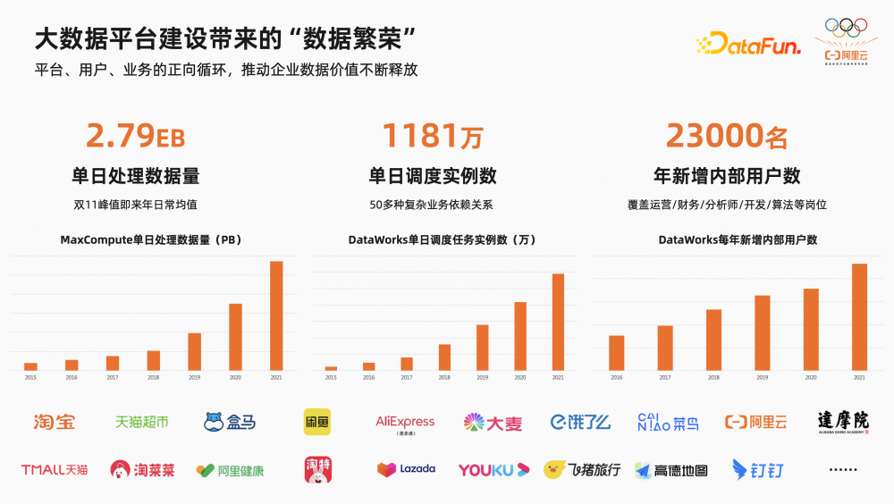
数据繁荣为我们带来了红利，同时也带动了各类数据治理需求的井喷。从2009年算起，我们做DataWorks已经15年了，对于一款发展了如此之久的产品，我们走过了阿里巴巴集团几乎所有外部知名的数据架构进化的时代，同时在当前也面临众多全新挑战。在大数据平台的建设过程中，我们经常遇到一些数据治理的问题，例如：任务调度随着规模增大经常挂掉，不稳定，集群计算资源不足；员工经常起夜处理告警，故障无法快速恢复；突发大流量导致数据服务宕机或不可用表数量越来越多，找不到需要的数据；缺少数据规范与标准，每次使用都要沟通；数据需求经常变更，数仓人员压力巨大数据使用人员多，管理与易用难以平衡；数据出口多，人为泄露行为管控难；法规不断更新，敏感数据发现难，数据分类分级难度高降本成为大趋势，技术挑战大；不知道成本问题在哪，在哪个部门/人；数据不敢删、任务不敢下不管是阿里巴巴集团内部，还是我们服务的众多阿里云上客户，和我们沟通的时候都希望聊聊数据治理相关的主题。他们面对众多数据治理需求，往往感觉无从下手，就像“按下葫芦浮起瓢”，每天都会冒出新的问题。我们其实没法一次性解决所有问题，但是可以逐步解决主要问题。基于DataWorks的建设经验，我们将企业的数据治理需求整理成四个大的阶段，每个阶段都有不同典型的数据治理问题，应该投入更多的精力来处理这个阶段的主要矛盾，并且从这些实践中，逐步形成企业数据治理各类方法论与规范的沉淀。起步阶段我们最重要的是得保障“有”数据，数据不断产生，数据量不断增长，我们需要保证数据产出的时效性，稳定性、数据质量的准确性，这些也是数仓同学最常面对的问题类型之一。在这个时候遇到的数据治理问题主要集中在集群上，例如任务长时间等待，计算、存储、调度等各种资源不足，数据无法产出，或者产出脏数据，集群挂了，运维无法定位问题，问题处理时间长，补数据止血难度大，人肉运维无自动化等等。这个时候，业务将会明显感受波动，有些故障甚至会造成业务资损。当我们“有”数据的时候，接下来面临的就是“用”数据，我们想要更多人来使用数据，实现数据普惠，但是用的人越多，需求也会越多，效率反而会受阻。我们的产品满足50人使用还是5万人使用，可以说是天差地别。这时遇到的更多数据治理需求主要集中在效率上，例如：各个部门人员找数、查数、用数需求不断增加，使用数据人员开始增多，数仓人员疲于取数；数据开始赋能业务，各类数据应用需求井喷，数据团队压力增大等等。这个时候，数仓建设可能逐步变得有点混乱，甚至有走向失控的节奏。随着用数据的人越来越多，前台也会建设越来越多的数据应用，带来的各类数据风险就会增大，我们要开始“管数据”，但是各类数据安全的管理动作往往会和效率背道而驰。在这个阶段我们解决的数据治理主要问题主要集中在各类安全管控能力上，例如：各类法律法规直指内部各类数据安全风险；不知道谁在什么时候怎么使用数据，出现一些数据泄露事件。成熟阶段意味着我们能实现数据业务化，但是面对当前的环境，经常会提出“降成本”的需求。那应该怎么降、降哪些，对于多企业也是一个难以回答的问题。而且对于一个成熟阶段来说，成本治理不应该是一个“运动式”“项目式”的工作，而应该将之前提到的各类公司数据治理的理念深入人心，形成常态化的工作。可以看到，降本往往是在数字化建设偏后期的需求。很多人一来和我们聊数据治理就说降本，其实在我们看来，对于绝大部分企业来说，降本的需求本身并没有问题，后面我们也会重点讲解下，但不妨可以回顾下前面几个阶段，我们是否做的足够充分，例如当前的成本高企，或许是因为第一阶段堆叠了过多的人肉，又或许是因为第二阶段各种人员无序使用资源。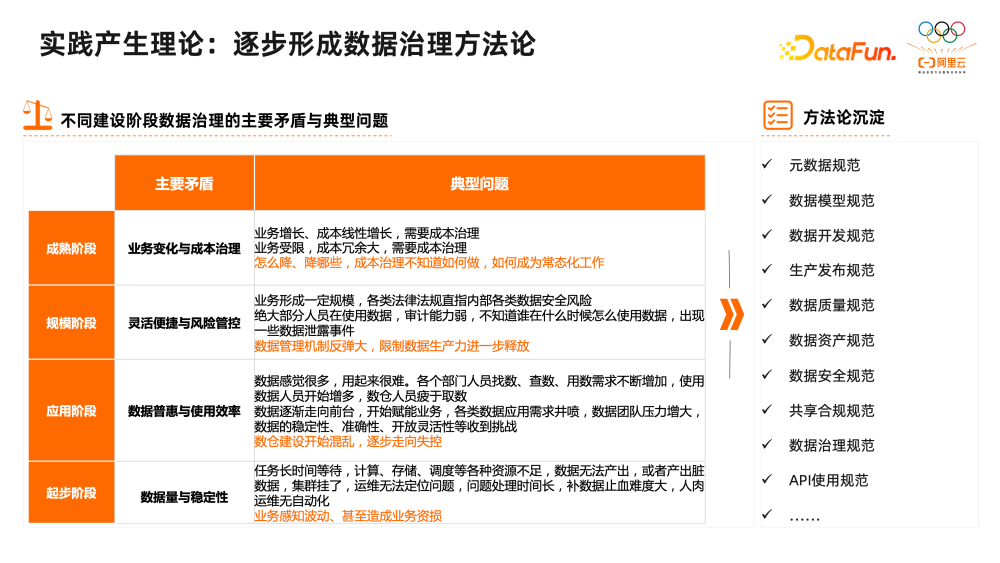
在经历这么多数据治理场景和需求之后，阿里巴巴在内部逐渐形成数据模型规范、数据开发规范、数据质量规范、数据安全规范等多种方法论，并且这些实践经验我们也会逐步沉淀到DataWorks平台上，让规范落地，逐步形成全链路数据开发治理平台。包含数据建模、数据集成、数据开发、数据运维、数据资产、数据治理、数据质量、数据安全、数据分析、数据服务等数据处理全链路流程，以一站式的大数据开发治理平台能力，满足数据治理中关于规范、稳定、质量、管理、安全、分析、服务等各个方面的诉求，我们在后面的各类实践场景中还会为大家详细讲解。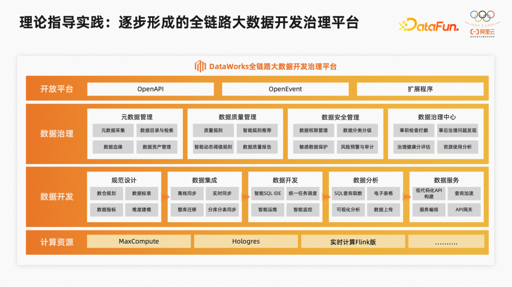
面对大数据平台众多数据治理问题的挑战，我们用1套组织架构，1部数据治理方法论，1套全链路治理平台来满足各类数据治理的需求。在大数据的“起步、应用、规模、成熟”阶段，对应“稳定、提效、管控、降本”等不同的目标，将精力投入到主要矛盾上，让数据治理平台需要紧密结合各类经验、场景与方法论。刚才我们提到了各个阶段的主要矛盾与问题，接下来我们将会为大家介绍DataWorks在各个数据治理场景下的主要实践，包含数据生产规范性治理、数据生产稳定性治理、数据生产质量治理、数据应用提效治理、数据安全管控治理、数据成本治理、数据治理组织架构及文化建设等方面。需要提一点的是，数据治理平台的开放性也非常重要，很多场景的实践也是DataWorks平台与集团内各个业务部门共创和紧密合作实现的。一、数据生产规范性治理
我们将数据规范性放在第一个讲，这是很多数据治理问题的源头，不管是第一阶段的生产稳定，还是第二阶段的应用提效，都和数据规范性紧密相关，我们举几个简单的例子：跨bu、跨团队依赖较多，数仓架构逐渐混乱，逐步有失控趋势，面临重建危机。业务含义不清、数据模型设计与物理表开发断链，有了模型开发效率也没提高。业务需要的数据指标开发较慢，类似指标没有批量构建的方式，缺乏指标的统一管理。业务数据含义口口相传，人工问口径耗费大量时间，交接人员也不清楚数据情况。数据混乱，导致数据产出时效受影响，数据质量稳定性不高。数据随意开发、大量任务重复计算、找不到也治不了，导致成本不断增加。所以，我们希望在第一部分就和大家强调下数据规范的重要性，有些企业由于业务的发展，往往会忽视规范的建设，经常采用“先污染，后治理”的方式，然后陷入各类业务需求，而良好的数据规范建设往往可以起到“事半功倍”的效果。DataWorks的智能数据建模同天猫、淘宝、盒马、本地生活、菜鸟等多个事业部进行共创，我们以某个事业部为例为大家讲解下数仓规范性的建设思路，该业务数仓团队从2020年开始与DataWorks团队不断共建智能数据建模产品，从最初版简单的录入系统，到集成逆向建模、多表克隆、多种引擎的代码模式、excel交互等功能，最终让整个数仓团队的开发效率提升30%，并且下线15%不规范的冗余的数据表。同时在整个数仓公共层团队与业务数据开发团队进行推广，全员使用，成为事业部落地数仓规范的统一平台。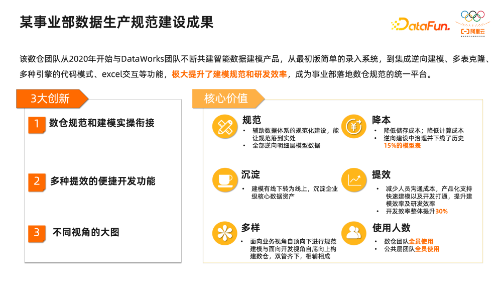
数仓规范性治理的方案主要围绕稳定性、扩展性、时效性、易用性、成本五大目标展开，整体方案主要包含两部分，分别是模型线上化与模型管理&评估。模型线上化部分，首先设计了“数据架构委员会”这样的组织保障团队，即搭建架构师团队，并将模型管理责任到数据负责人；接着拟定事业部数仓的规范制度，例如数据模型规范、数仓公共开发规范、数仓命名规范等；最后将规范制度和模型负责人通过产品工具 DataWorks 智能数据建模产品进行落地。完成模型线上化只是第一步，接下来模型管理&评估是重点，通过事前模型评审、事中模型评估打分、事后模型治理推送，实现模型管理的闭环，促进模型不断优化和完善。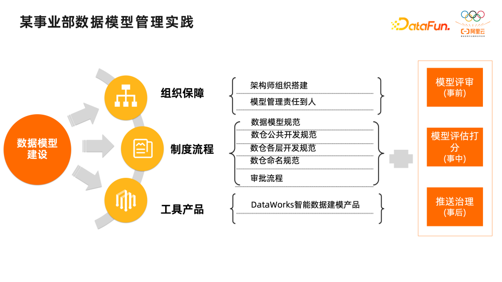
方案设计完成后，通过对所需功能进行梳理，总结出从规范定义、便捷开发、发布评审、业务管理四个模块来建设智能数据建模平台：在前期，数仓团队是没有这个数据建模平台的，大家都是以线下的建模方式，比如数据开发对 Excel 梳理后，先进行数据探查了解数据基本情况，之后进行模型的设计，然后再线下进行模型评审。整个模型设计和评审都在线下，最终导致大家数据建模的时候没有形成一个规范，数据开发的过程不严谨，下游有了大量的引用之后，切换的成本也非常高。并且从维护角度来说，用Excel建模的方式，当数仓开发人员变动后，Excel中模型交接不便，难以持续维护，容易造成企业宝贵的数据业务知识流失。所以数仓团队希望将规范的定义搬到线上，下图中列出了线上规范定义的主要内容。之前数仓团队的评审也是在线下进行，在架构师和工程师比较忙的时候，评审流程就不够严谨，甚至没有走评审的过程就直接发布了，所以希望将这个功能也搬到线上去。发布前我们会对表命名、字段命名进行强校验，同时支持多引擎发布，比如离线数据存在 MaxCompute 或者 Hive 上面，还有一部分数据存在 MySQL 或者 Oracle 上面等等。影响性检查是模型发布之后，对于下游的引用这个模型的 ETL 脚本是不是有一些影响，比如有的时候新增了一个字段，下游同学使用的时候是 Select * 的方式，而表没有新增的这个字段，就会导致下游任务报错。这是核心重要的一点。数仓团队希望将建模方式从线下搬到线上之后，不要影响数仓同学的开发效率，所以设计了各种提高效率的便捷开发功能。这是从使用的角度上来说的。对于研发人员来说，有业务分类和数据域的视角，对于业务人员来说，提供数仓大图和数据字典的视角。从成本治理的角度来说，比如一些历史上的模型可以做归并或下线。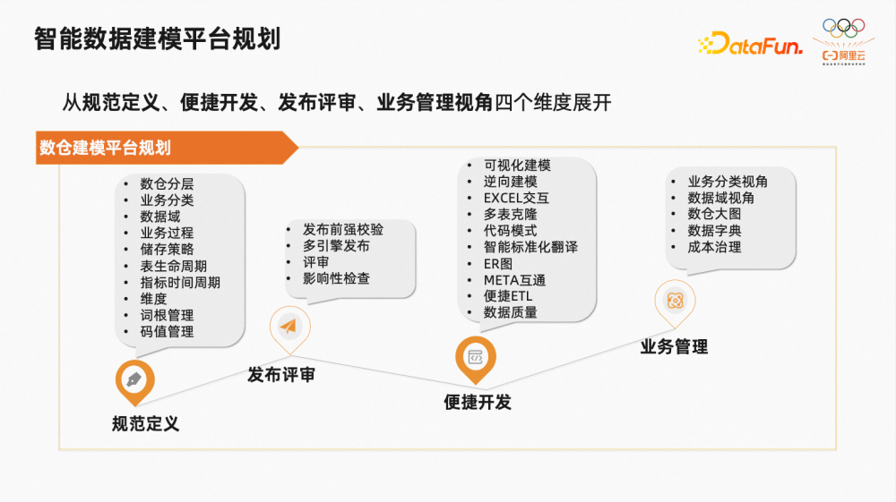
这些功能落地成智能数据建模平台产品，从实践来说，主要分为两部分，首先是正向建模，相对比较清楚，基于维度建模的理论基础，以及我们在数据中台的众多实践，从数仓规划、业务域定义、数据域&业务域过程定义、数据标准定义、维度建模、原子&派生指标定义、模型发布七个步骤。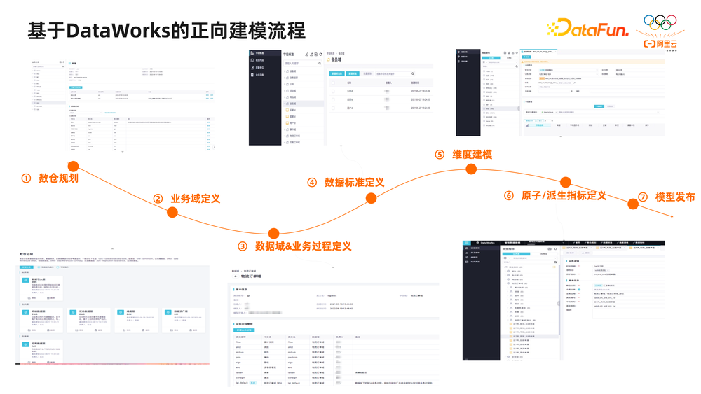
针对存量的历史模型，通过DataWorks逆向建模的能力，对存量模型进行了全面分析和盘点，下线了若干历史、低价值的模型，并完成存量模型100%的线上化管理。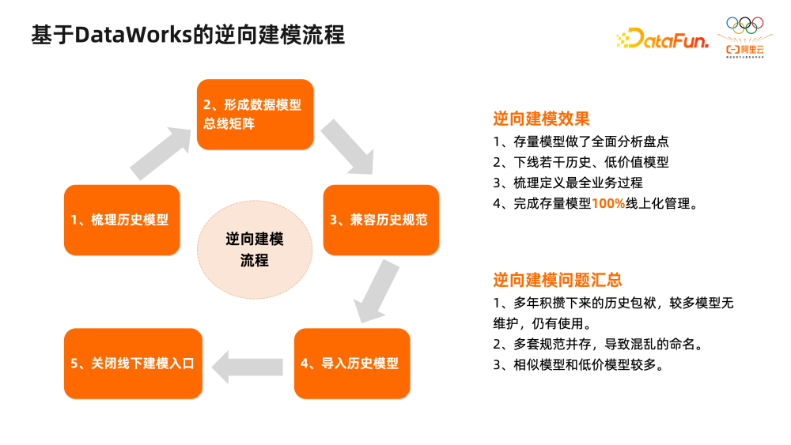
以数据中台方法论为指导，DataWorks智能数据建模形成了数仓规划、数据标准、数据建模、数据指标四大产品模块，成为各部门统一使用的数据建模平台，累计形成数据模型表超过1万张，有效提升阿里巴巴集团整体数据的规范性。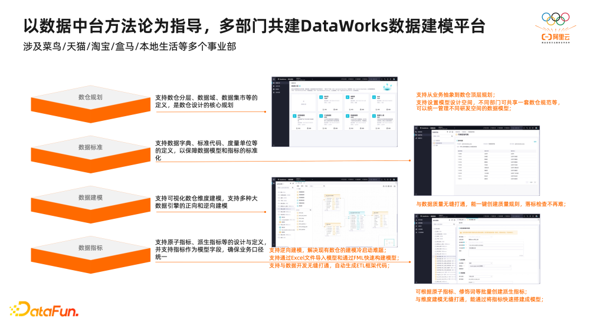
数据生产规范性是很多问题的源头，建议要最先考虑起来，往往能起到事半功倍的效果。数据模型是企业特别重要的数据知识，建模平台需要通过平台化的工具来做，而不是原先线下Excel之类的方式，一时方便，长期成本反而很高。这样不仅能提高对内交流、应用的效率，还能防止由于员工的变更，造成企业数据知识的流失。二、数据生产稳定性治理
数据生产的稳定性是企业在建设大数据平台时会遇到的第一个问题，对于数仓同学来说，值班是工作的一部分，值班同学的一晚大概是这样的：- 凌晨1:30，收到电话告警，机器人自动播报“XX任务已延迟XX分钟，请尽快处理！”
- 凌晨1:31，起床打开电脑，处理告警问题，1:40、1:50、2:00，电话告警不断轰炸，手机不断震动，前往客厅办公
- 凌晨2:00，对于上下游任务逻辑不太清楚，拉起一批同学起夜
- 凌晨3:00，老板被Call醒，打来电话询问情况，沟通后续处理方案
- 凌晨5:00，所有任务处理完成，等待集群资源计算数据
- 上午9:00，刚出电梯口，被业务小二围住追问数据产出时间，并开启一天的工作
可以说，天下数仓同学苦值班久矣！在阿里巴巴内部，当我们在做数据稳定性治理的时候，往往会围绕两个核心指标进行优化，分别是起夜率与基线破线率。指在日常工作中，数仓值班同学需要起来处理问题的天数占比全年天数，如果一个晚上无事发生，数仓同学不需要起夜，我们也引用了游戏中的一个概念，称为平安夜，起夜率相对越低越好。基线是DataWorks独创的理念，在基线上我们可以为任务设置最晚产出时间。例如当天营收数据，最晚产生时间设置为凌晨2：00，如果这个任务最终产出超过2：00，那么这条基线就破线了，基线破线率同样也是越低越好。梳理团队核心数据产出任务与链路，确定基线任务分级，将不同的任务配置1/3/5/7不同的基线等级，同时配置基线产出时间与告警余量。告警余量是一个非常重要的概念，类似抢救时间。例如刚才我们提到的任务产出时间设置为凌晨2：00，如果告警余量设置成1小时，基线会预测任务产出时间，如果时间超过凌晨1：00便会进行告警，方便我们提前知晓核心任务的产出风险。基于基线功能以及一些元数据，数仓团队针对基线告警进行治理，包括告警的认领、评估、处理等，同时会针对基线告警进行根因分析，看下是由于什么原因导致的数据稳定性问题，常见的有据质量报错、SQL语法报错、系统环境报错、权限报错、同步任务报错等，进行生产稳定性的根治治理最终，团队产出稳定性周报，每周报告基线破线率及平安夜数，在值班手册中，也会形成常见问题排查宝典，治理问题清单，将稳定性治理的经验沉淀成团队共同的知识资产，并且进行责任公示，设计奖惩制度、达到稳定性治理正向循环。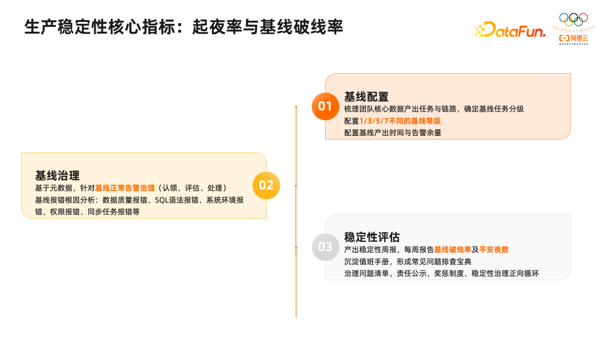
智能基线可以说是DataWorks中守护数据安全生产的核心功能，里面结合了DataWorks多项运维诊断和MaxCompute引擎能力。当1个任务被设置1/3/5/7不同的基线等级后，整个平台运行的时候会按照优先级为核心数据产出进行重要性分级，高优先级任务及其上游，将获得更多的任务调度与MaxCompute的计算资源，以保障高优先级任务的运行资源。DataWorks也将其中涉及众多调度与资源分配的核心技术申请了国家专利。1个核心任务可能会前置依赖多个任务，当我们在最终产出的任务节点配置基线后，前置的依赖任务就不需要再逐个配置运维告警了，将会极大提升运维效率。任务开始运行时，DataWorks会回溯依赖链路上所有任务的历史运行记录，同时结合平台当前运行及集群资源情况，每30秒刷新智能预测数据产出时间。例如设置核心任务期望产出时间基线在2：00，在核心链路中间，有个平时20：00产出的任务20：30仍未产生，结合当前集群水位情况，判断将会导致希望在2：00产出的最终核心任务延时，那么数仓同学将会在20：30就收到告警，提前干预处理延迟任务，而不是等到最终2：00任务已经延时了，才开始处理。提前收到告警后，运维同学也会在DataWorks的运维中心处理告警任务， 在DAG图上查看上下游及每个周期实例的运行情况，通过运行诊断排查全链路上的告警问题，例如上游依赖告警、当前任务定时检查，调度资源检查、MaxCompute资源检查等等，可以快速定位并排障。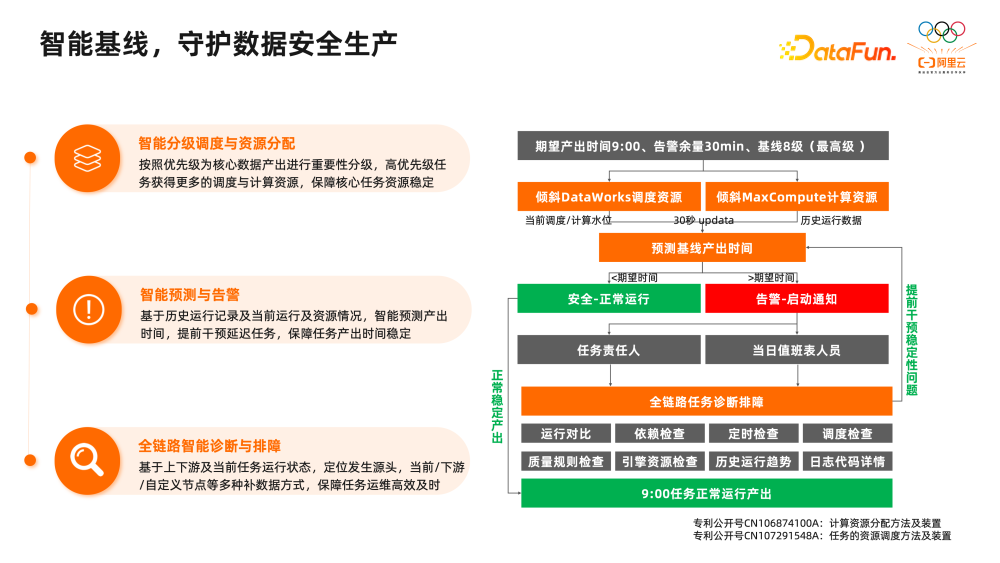
智能基线的配置及故障处理参考下方，针对任务责任人和值班人不同的情况，DataWorks还设置了值班表的功能，可以将不同责任人的告警消息统一推送给当前值班表对应人员。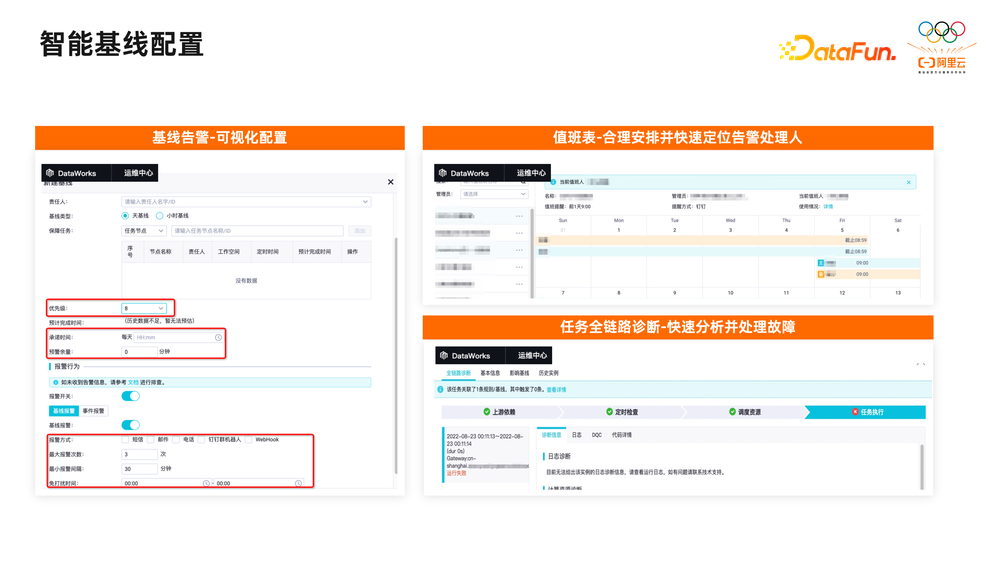
以内部某个数仓团队为例，在稳定性治理之前，团队每周需要2.5人日进行值班，其中每年损失的不仅仅是135天的值班人日，凌晨起夜的同学135天日间的工作效率也会收到极大的影响，严重丧失工作的幸福感。稳定性治理之后，团队7级基线的破线率从每月的4次降低到了0次，值班同学起夜率从97%降低到了33%，同时极大地提升了员工的工作幸福感，这也是稳定性治理的重要意义。数据生产稳定性核心会用起夜率和基线破线率来衡量，通过围绕智能基线构建的全链路运维诊断能力来支持稳定性建设。智能基线可以基于集群当前水位，历史运行情况，智能分配计算与调度资源，让核心数据优先产出，并提供智能告警的能力方便提前干预处理。另外，稳定性的治理对于员工的工作幸福感也是非常大的提升。三、数据生产质量治理
在我们针对数据生产稳定性进行保障过程后，往往同步会关注到的，就是数据生产的质量问题治理。数据质量的好坏，往往对业务侧所要执行的决策和流程有着直接关联，各种场景不但需要能“成功获取数据”，还需要能“成功获取正确的数据”，这样才能实现业务侧的成功。以阿里集团最常见的电商包裹场景举例，我们能看到，当一件包裹上出现了数据质量问题后，能引发不同维度上的业务问题。通常在实际生活中，我们针对包裹会有重点关注的基础数值属性，比如包裹的重量、体积，因为会和包裹的价格、包裹的运输安排都有关系。当出现这些属性不符合预期的情况时，就会出现针对这件包裹的各种业务问题的追查。例如，当重量值为空值时，或者等于0的时候，按数据规则反应现实过程，则是出现了没有重量的空包裹，这是不符合对物流和计价的业务要求的。而当重量、体积值超过了正常定义的阈值时，例如1个小包重量很大，按实际情况也是不合理的情况。所以，当出现这种数据质量问题时，我们就会关注，到底是业务上出现了真实问题，还是实际数据加工过程出现了污染。如果真实业务没问题，而是数据出现了问题，则会影响到后续针对包裹的结费计算、运输网络的规划、供应链优化等等。平台与消费者、平台与商家、平台与供应商之间的交互，都会被数据质量问题所影响。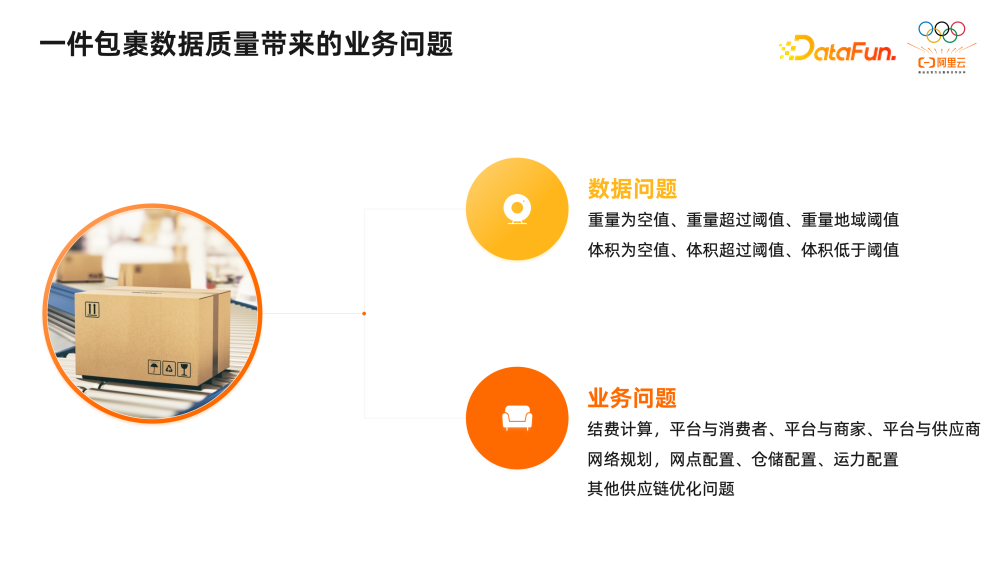
而这些数据质量问题，如果没有治理管控，则会在数据生产过程非常普遍地出现，如数据残缺不全、数据不一致、数据重复等等，导致数据不能有效地被利用，影响数据可靠性保障和有效的业务产出。所以数据质量管理，需要如同产品质量管理一样，贯穿于数据生命周期的各个阶段。当生产环境中产生了与现有规则不符的持久化数据，或数据延迟的问题，则定义为「数据质量问题」。其中引发故障的，则定义为「数据质量故障」。而数据生产质量治理的过程，也就是我们为了避免「数据质量问题」所要建设的重要体系。我们从业务出发，从对业务侧最核心关键的业务实体，进行数据质量需求的梳理，来明确数据质量问题。如针对电商交易，最关心的就是商品、用户、计费、营收方面数据的质量情况。那什么是影响这些业务实体生产稳定性的关键质量要求呢？在阿里巴巴内部，面向这类商业产品的数据服务支撑流程中，重点会关注以下两大方面：（1）面向商业级服务的数据质量高保障要求：由于在阿里巴巴中台里，数据大量以服务的形态，提供给各个商业化的业务应用，因此，这意味着不只是数据本身产出的保障，也直接影响着最终业务侧承诺质量的保障。比如，由于更多客户业务根据数据进行决策，数据高准确性要求也因此出现，对数据准确性的不再只是满足一定的数据分布即可，需要结合更多的业务知识对数据准确性进行更准确地评估。再如，由于部分TOB业务对数据产出的时效性有一定要求，单一架构的数据库可能不能完全满足业务的产出速度需要，需要异构数据库合作进行数据链路建设，因此如何保证异构数据的一致性也是需要解决的问题。（2）对数据质量协作保证过程的高效率要求：多角色流水线作业下，如果要保证数据质量，除了需要制定数据质量规范外，还需要在各环节完成对应事宜，比如研发环节、测试环节、监控环节都有面向各环节要完成工作的人员，分别需要到各模块各自操作，往往还会出现重复性工作，比如质量测试的用例，和质量监控的设置逻辑，通常是类似的，需要能有平台工具，帮助多角色用户，针对数据链路中所产出的所有线上数据质量问题，进行汇总，分析；能帮助质量小组，把纸面要求、规章制度中定义的数据问题，能定期复盘，转化为数据度量落在系统中；能反推研发各阶段，共同高效地提升数据质量。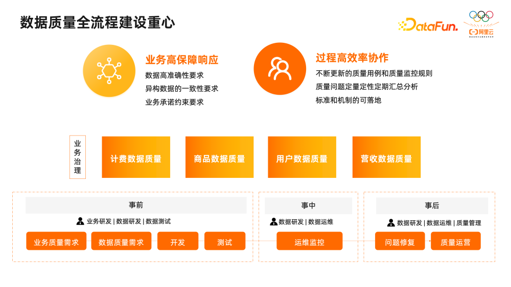
在这些关注点的牵引上，阿里巴巴数据质量的全流程体系，相应地在如下领域完成重点增强。针对多角色协作式的数据流程，基于DataWorks了提供统一的数据质量平台工具，能在一个平台上流水线式地完成所有协作过程。围绕开发、部署、运维和监控环节的工具能力提升，极大简化了数据团队各角色的日常工作流程。在持续监控的数据质量监控的基础上，加强事中防控质量问题，事前预防校正问题维度，让数据质量在每个环节起作用，各个角色侧都能高效落地。 1.事前：在研发过程中保障代码质量，提前规避质量问题，通过代码检测、质量自测的能力让研发可以提前消灭问题；2.事前：让测试更有效地进行质量测试，提供上线前的冒烟测试、对比测试，从之前仅完成基础功能验证的测试，完善拓展其测试维度，不断积累围绕业务承诺要求的规则，从而让研发和运维都能够进行快速地自动化测试，持续进行数据链路的部署更新3.事中：数据质量检测任务直接关联调度任务产出。做到数据即产出即检查，当高保障数据任务运行时，上游数据出现脏数据时，能及时阻断任务，规避质量问题数据对下游的影响，并通过告警机制及时提醒用户进行任务处理。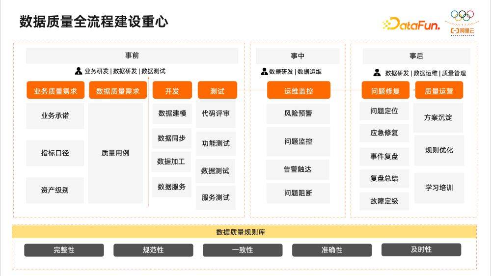
针对需要高保障的大批量数据表的质量管理需求，也能让质量责任人以低成本方式，提升规则覆盖率，减少人工配置负担，降低阈值设置难度和规则误报率。而在海量数据、多种数据种类情况下，由系统保障平台性能，做到大数据量下质量监控仍能高效运行，并且尽可能减少对业务数据链路产出的资源消耗影响，做到以最小成本执行。面向复杂数据架构的场景时，也能针对多种引擎下的数据，持续地保障数据的一致性及质量管理的延续性。
数据质量规则作为承载保障体系的重要载体，从人肉防控梳理，做到平台规则沉淀的自动检测，最终走向质量高效化的智能管理。这里面有大量的基础性工作：- 末端表标注业务重要性，向上追溯链路中的表，以业务作为抓手来治理质量问题
- ETL作业统一调度，质量监控与调度系统集成，做到事中即时智能管控
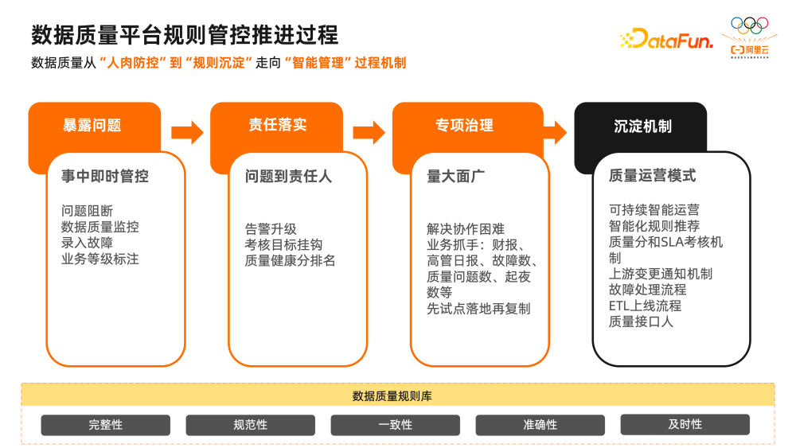
平台整个完成面向不同业务实体的质量治理过程，由平台侧和质量保障小组，不断沉淀通用平台侧和业务维度侧的质量规则模板。整个过程中，针对不断产生的新的数据表及相似业务，提供快速模板化规则配置、规则推荐，并根据历史的业务运行结果进行动态阈值的智能判定，减少新数据和新用户的配置成本，减少对需要关注指标及数据的质量治理的遗漏，全面提升数据可信度与价值密度。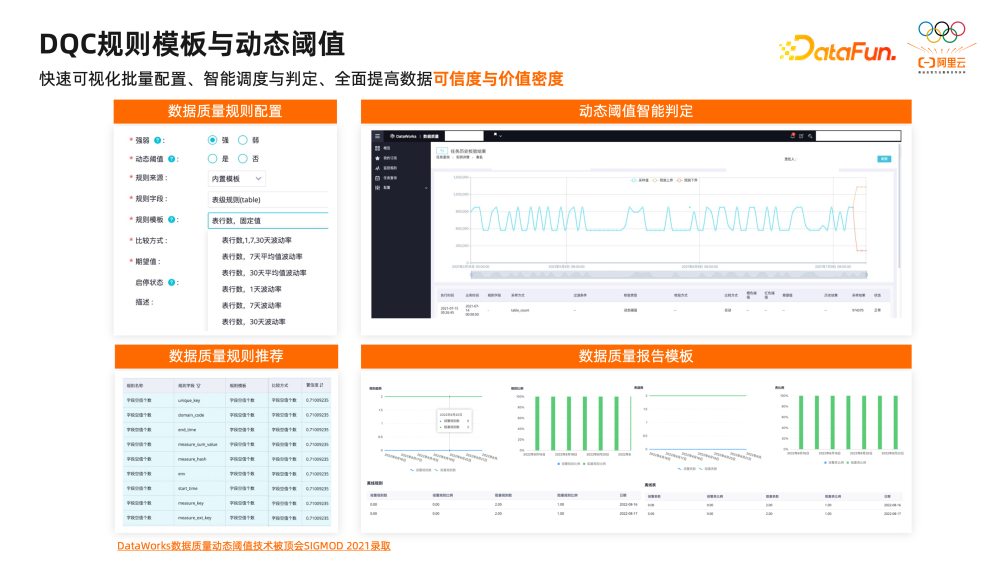
最终沉淀为针对数据生产过程的质量稳定性全流程保障方案，从平台、规范、组织三方面完成了相应建设和沉淀，根据实际的业务流程和数据流程完成。1.质量治理策略：建立线上数据质量问题管理处置机制2.质量问题监控：建立全流程数据质量问题的监控和预防体系4.质量度量评估：建立可复用的数据标准和统一的质量评估体系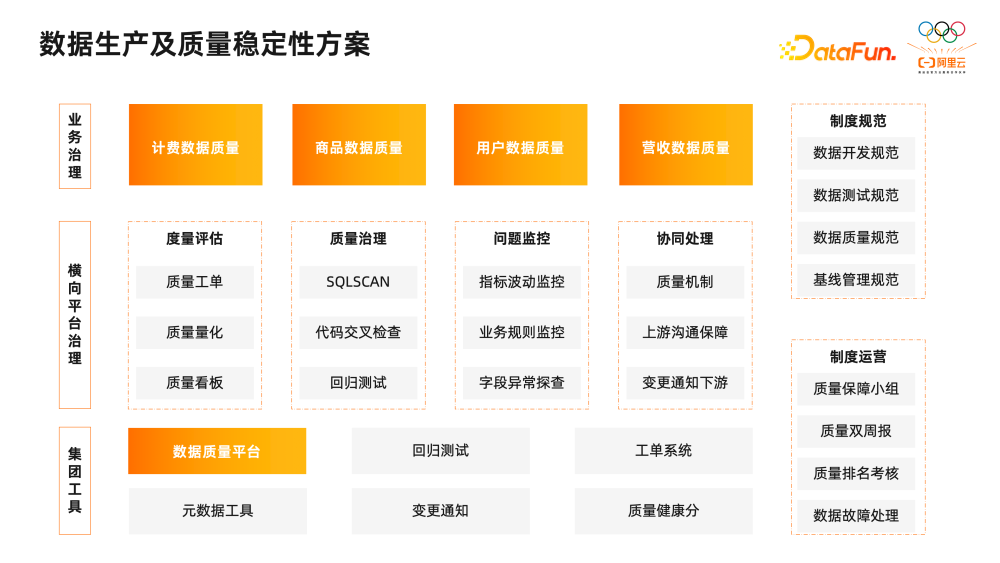
最后，我们还是要从业务关注我们的治理效果，以开头举例的包裹质量问题为例，通过数据质量治理的建设，以及围绕业务对象的协作规则沉淀。不仅从数据端，能够完成对数据的异常监控、推送和分析，使得可以及时对数据质量异常问题进行修复。同时，从业务端，也针对测试的数据，通过规则进行了前置校验，在数据流入时就进行了限制和告警，也能让业务端小二也能进行异常情况的责任判定，通过标准质量数据修复动作进行数据修复。整体包裹参数的数据准确率提升至99%以上，通过数据质量治理也推动了业务流程在质量保障环节的优化，最终为我们的业务高价值服务进行了更好地保障。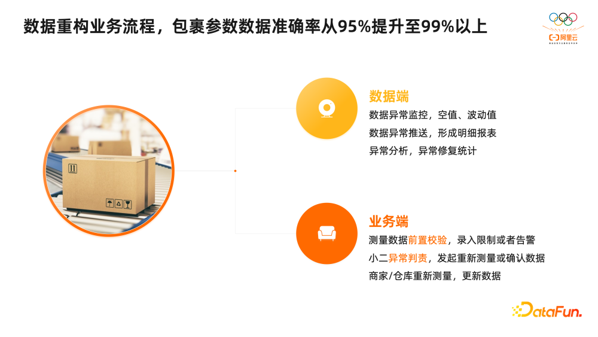
数据生产端的治理除了规范性、稳定性，还包含了数据质量。数据质量问题往往能直接产生业务问题，所以数据质量管理，需要如同产品质量管理一样，贯穿于数据生命周期的各个阶段。在持续监控的数据质量监控的基础上，数据质量平台加强事前预防校正问题、事中防控质量问题的能力，以及各类用户智能配置、智能阈值判定等能力，让数据质量在每个环节起作用，各个角色侧都能高效落地。四、数据应用提效治理
刚才的数据生产稳定性与质量稳定性，更多解决第一阶段“有”数据的治理问题，接下来进入第二阶段，进行数据应用的时候，一线的业务同学在使用数据时也会碰到众多难点。例如：想找的数据，不知道去哪找，特别是用业务术语去找的时候面对这些问题，用户找数/用数等应用场景的提效需要多管其下，比如最开始提到的数据规范，如果数据模型做好了，就可以在源头上提升数据的可读性，避免针对数据释义的多次频繁沟通，并消除数据指标的二义性。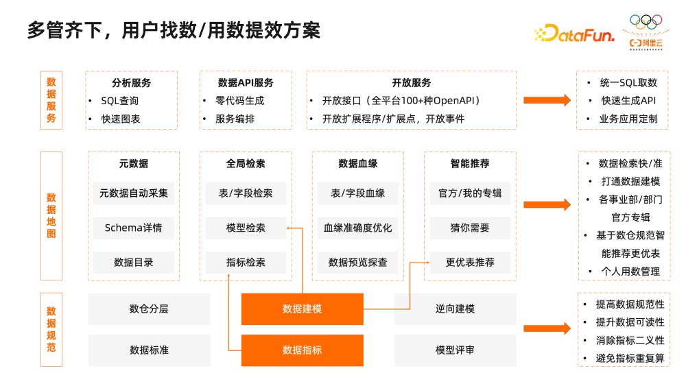
基于元数管理的能力，DataWorks提供数据地图功能。在数据地图里，可以实现元数据的自动采集与数据目录能力，针对找数常用的检索功能，提供表/字段/模型/指标等多种检索能力，并提供数据血缘能力，例如业务同学检索到一张北京地区商品营收表时，想查看全国的营收数据，就可以通过血缘查看这张表的上游或者下游表，快速获取对应数据。部分新来的同学对企业内部数据情况不是很熟悉，数据地图还支持将各类常用表作为官方数据专辑给到所有用户，并且在搜索时会推荐信息更加完善的表。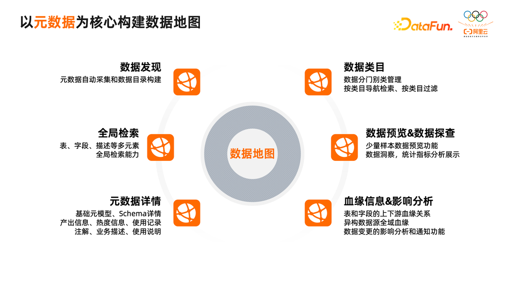
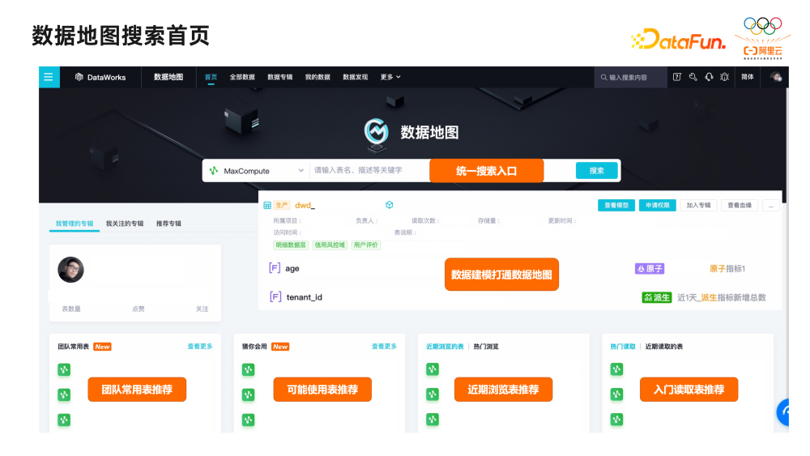
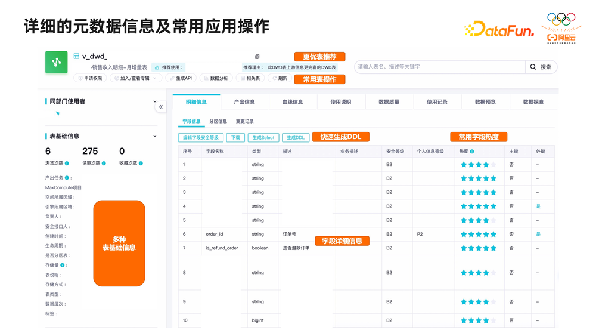
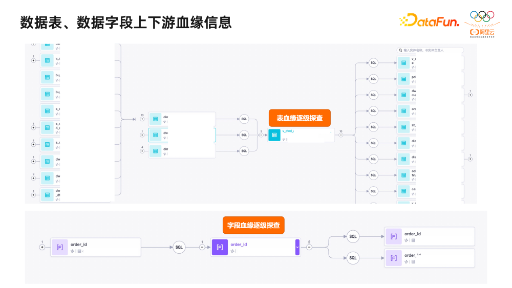
数据建模与数据地图解决了大部分的找数问题，在用数阶段，DataWorks提供了统一的SQL查询分析工具，找到表后通过SQL的方式就可以直接进行快速查询，里面在今年更新了众多的体验优化能力。- 页面布局可以切换上下布局和左右布局，左右布局可以更好利用一些外接显示器场景，显示信息更多
- SQL编辑器提供自动的代码补全，代码格式化、代码高亮等能力
- 查询结果展示可以分为明细数据模式和图表模式，支持拖拉拽进行快速地图表编辑
- 针对数据的上传和下载开通了快捷入口，也支持针对数据下载条数进行管控
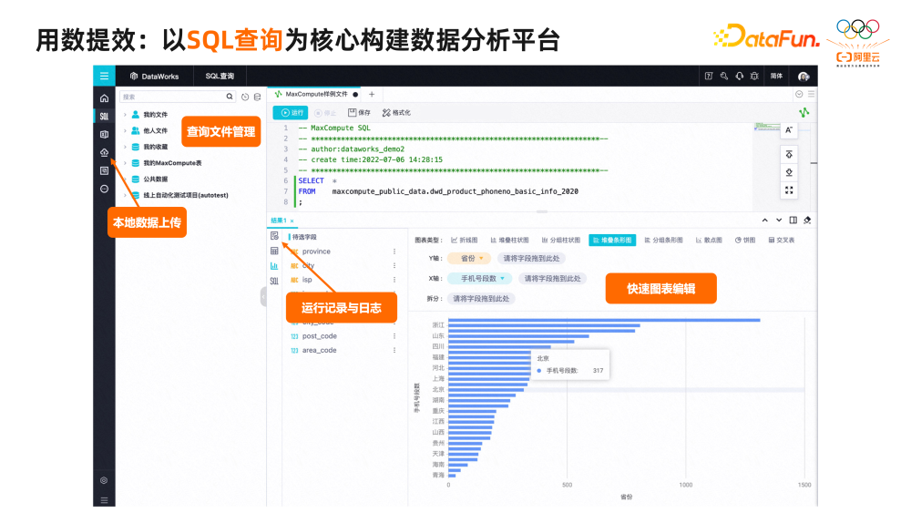
数据分析是方便业务同学直接使用，但是面对更多复杂的业务需求，必须采用定制化的开发形式，在这个时候，数据治理平台也需要提供更多的开放性，来满足不同的需求。DataWorks除了0代码生成数据服务API的能力，还提供了整套开放平台能力，包含OpenAPI、开放事件以及扩展程序（插件），允许用户自有系统与DataWorks进行深度对接，以及对DataWorks的处理流程进行自定义，业务部门可以自定义数据治理需求与应用能力。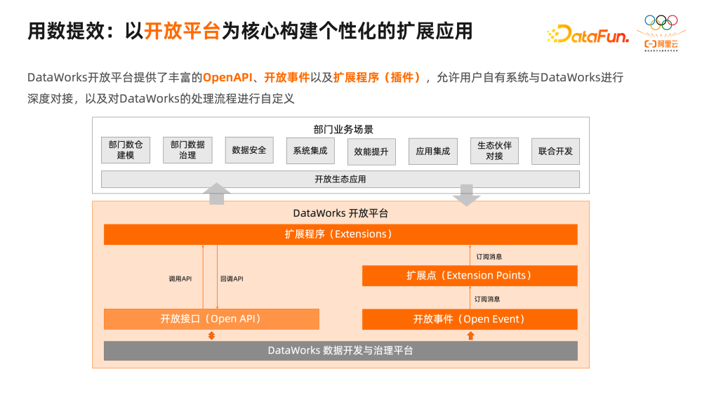
DataWorks与阿里巴巴集团内部多个部门合作，目前各个事业部累计模型表数超过1万张，核心表使用人数提升64%，开放平台API日均调用次数超过1500万次，平台月活跃小二超过万人，取得了一定的效果。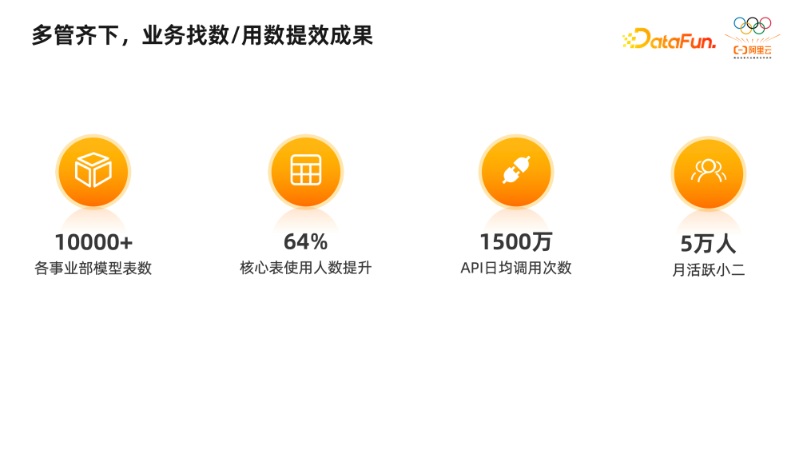
数据应用提效治理从数据建模、数据地图、数据分析、数据服务、开放平台等方面进行多管齐下的治理，展开讲的话内容非常多，涉及了我们大数据平台用户可能使用到的各个角落，可以说是一个注重体验的系统性工程。另外面向应用，DataWorks还在构建一个数据资产平台的产品，从使用的维度对数据进行更好地整合，方便用户更高效地使用数据。五、数据安全管控治理
当有越来越多的人来使用数据，那安全管控就会成为一个比较头疼的问题，绝大部分的管控行为就是“反便捷”的，用的人越多，影响越大。不论是阿里巴巴自身还是其他企业组织的大数据体系，在安全管控方面有以下几个痛点：- 存储量大、用户种类多：由于数据仓库/数据中台是集成的、反映历史变化的，因此注定了企业的数据仓库集中存储了各部门、各业务系统的数据，阿里巴巴内部的一张宽表动辄达到TB级别的存储量、每日新增上百张表与数百GB是不可避免的事，这些数据不仅包含结构化数据，也包含非结构化、半结构化数据。如果我们希望将这些数据进行精细化的管理加密，会导致数据分级分类成本过高、耗时较长及遗漏的问题。
- 用户基数大、用户种类多：数据中台是用于服务企业决策、日常分析的基础设施，在数据采集阶段，通常由开发人员配置任务将数据导入至数仓，加工阶段由数据工程师进行代码开发与侧，使用阶段则由各类运营、分析师通过各类Client来进行即席查询，也包括某些业务系统的直接调用。之前我们提到了，阿里巴巴，每天有数万名员工（包括：开发、运营、分析师、销售、HR等岗位）以各类方式接入使用数据仓库。如此多的人员授权就成为了难题，特别是在人员入职、离职、转岗场景，管理员需要花费大力气维护人员权限，非常容易出现过度授权、权限蠕变等问题。
- 客户端操作界面多样性：在使用数据仓库的人员中，部分开发人员会通过命令行直连，大多数人员则是通过可视化界面与自己的认证信息连接使用。由于不同数据应用所提供的服务、所服务的群体不一样，因此某些业务团队会自行开发适合自己的客户端界面以达到业务所需效果。而实际上授权过后的操作行为就是不可控的，各界面上的人员操作是否合理、是否符合工作所必需的原则是难以管控的。
- 数据流转链路复杂：数据在采集&传输、生产&开发、分发&使用阶段都涉及不同的流转链路。在采集&传输阶段，工程师可能通过离线、实时链路在内网、公网进行数据传输；在生产&开发阶段，少量数据会被从开发环境加载到生产环境用于测试，大量数据则会设计跨项目、跨DB读取与写入；在分发&使用阶段，由于不同业务系统处于不同网络环境，因此存在大量数据回流（出数仓）行为，这些行为可能通过数据服务API、离线同步链路来实现，同样可能涉及公网、内网。如此复杂的流转链路对加大了管控某些不合规数据流转行为的难度。
- 结果数据交付：数仓中最终可用于支撑分析决策的数据绝不是通过简单逻辑就能加工得出的，通常会涉及多团队、跨系统、多处理逻辑的交付，常见的数据产出逻辑可能涉及通过多个业务团队的数据，需构建十多个层级、总共上百个加工任务的工作流程（DAG）来使用。对不同团队的数据可用性、完整性管理，成为了企业安全管理员一项艰巨的挑战。
之前，阿里巴巴就联合中国电子技术标准化研究院、国家信息安全工程技术研究中心、中国信息安全测评中心等20家业内权威机构联合编写国家标准DSMM（数据安全能力成熟度模型），可让企业更清楚自身数据安全水位，并采取有效措施提升数据安全防护能力，从而有效保护消费者的数据安全。目前，以DSMM为抓手，在阿里生态内进行数据安全治理实践，对生态企业根据其数据安全能力进行分层管理，实现业务与安全挂钩，促进生态企业主动提升数据安全能力，接下来我们将会介绍一下在DataWorks平台层面一些安全管控经验。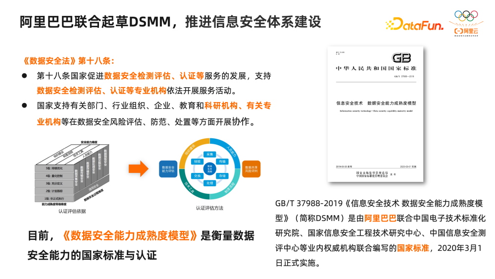
数据安全治理的第一要务是梳理资产并对其进行分级分类，这已经成了数据安全行业的共识。面对PB级别庞大、每日新增的数据，人肉梳理是不现实的，因此我们会在“数据保护伞“上基于名称匹配、正则匹配、行业AI分级分类模板来配置数据识别规则，通过这种智能化的方式，可以快速发现敏感数据并进行打标。另外，除了一些表数据，数据安全还包含了一些类似数据源、任务、规则等非数据类的敏感数据，也是需要在梳理的范围之类，很多数据安全事件往往来源于这些非数据类资产的违规操作。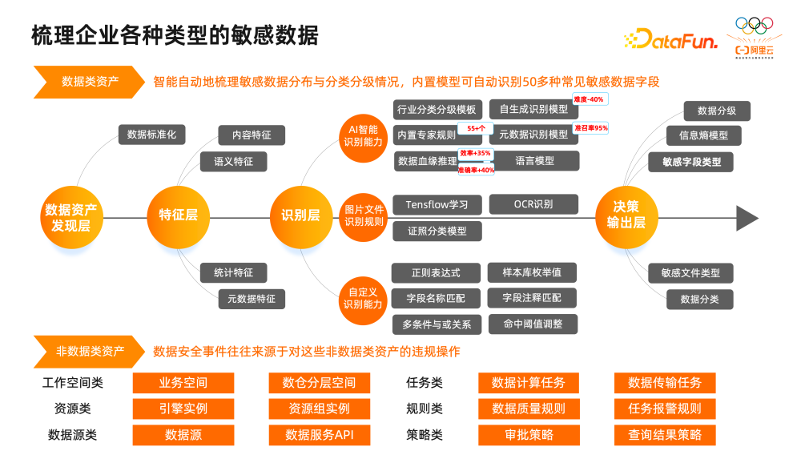
基于各类法律法规的合规要求，我们建设了“识别->防护->检测->响应”各阶段的数据安全技术工具能力，这些能力也会同时覆盖数据安全防护全生命周期，接下来我们会介绍几种典型的数据安全治理场景。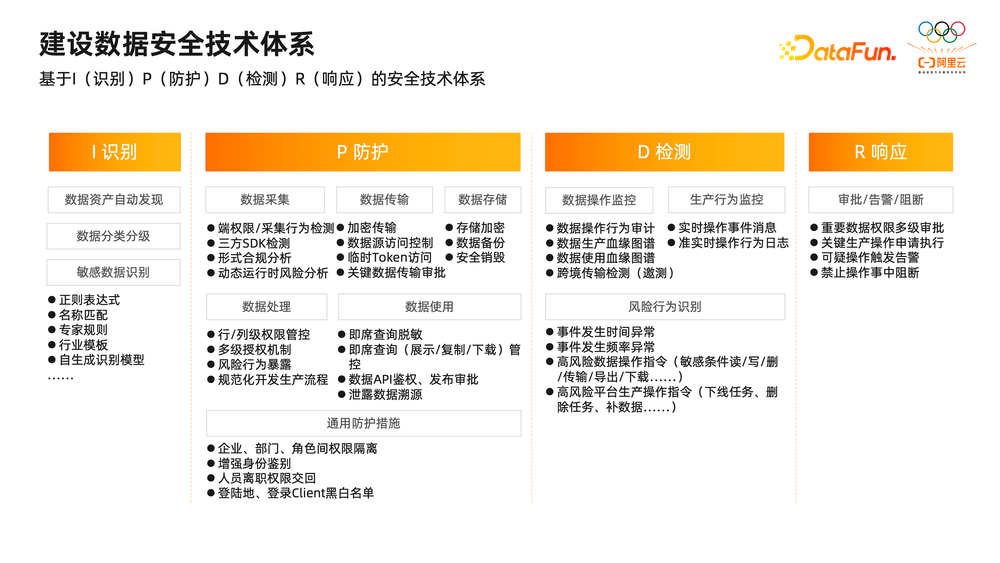
为了方便使用，DataWorks提供了多种方式，例如平台内置了分析师、数据开发、运维等角色，基于角色的常见职责，分配角色后会直接赋予一些该角色的常见权限，不需要再逐个勾选。那基于一些特殊的定制化权限，我们也提供了OpenAPI的形式进行自动化地授权，实现人员自动添加/自动授权/按需申请权限，让团队内分权管理、各司其职，规范化开展数据生产开发流程。同时，针对一些敏感数据，还可以自定义审批流，进行访问控制，例如L1数据仅审批到表Owner、L2数据审批到部门安全负责人，L3数据审批到CIO等管理层。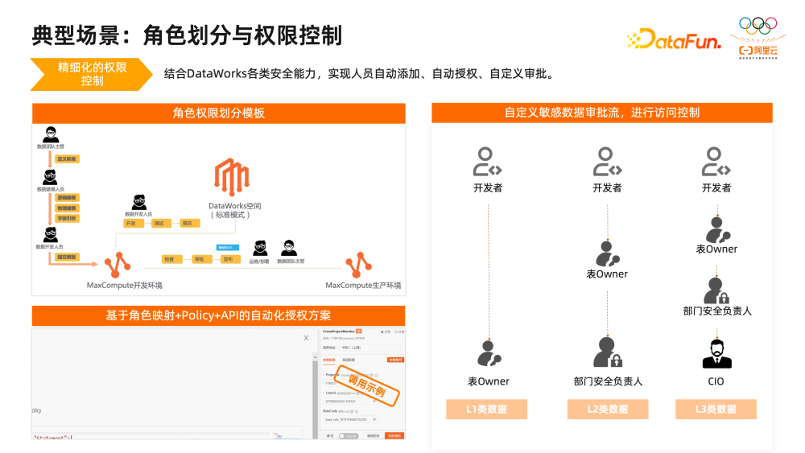
虽然有些人已经申请了表的权限，但是针对一些敏感数据，我们还需要开启更高级别的保护。例如数据脱敏功能可以针对已经识别的敏感数据，进行格式加密、掩盖、HASH加密、字符替换区间变换、取整、置空等多种方式，这样我们就可以实现敏感数据的去标识化（脱敏），达到保护的目的。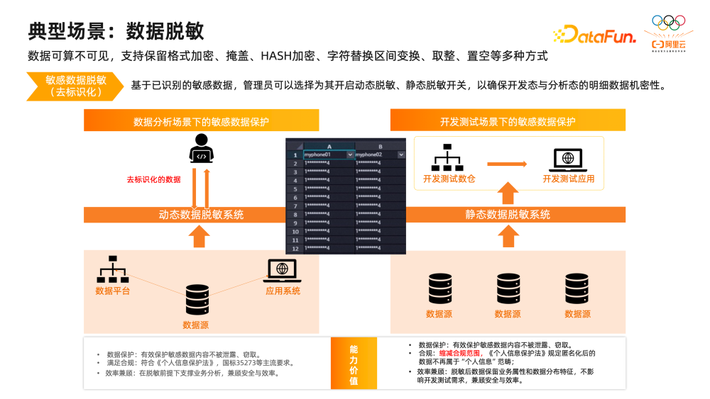
风险行为肯定不止查数据这种行为，DataWorks内置了AI数据风险行为治理，基于智能UEBA引擎配置各类风险规则，采集分析用户行为并智能判断各类诸如恶意数据访问、恶意数据导出、高危变更行为是否需以告警、阻断、审批等操作进行响应。在此阶段，我们会配置诸如数据大规模查询展示/复制/下载、数据DROP/DELETE/UPDATE、单位时间数据操作偏离、导出大量敏感数据、高敏感查询条件、事件发生时间异常、数据服务API发布、数据跨域同步等阻断或审批规则，以此来防范人员因蓄意或安全意识缺乏、误判而导致的不合理行为、风险、损失。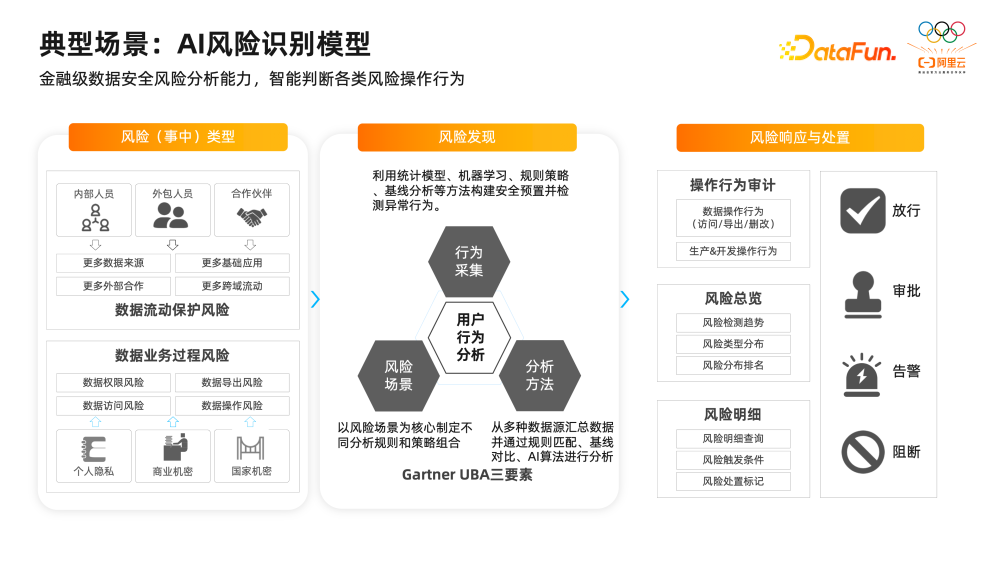
在上述相关治理动作落地后，我们在合规、攻防、降本提效方面都取得了明显成效。- 100%释放用于数据梳理、分级分类、风险发现的巨大人力。
数据安全治理的需求多数来源于由于法律法规的要求，以及大数据平台用户增加带来的安全风险，而管控和效率绝大部分时候又是相背的。所以在安全治理的时候，我们不仅仅在平台基础能力上要满足各类安全合规的要求，同时需要提供类似敏感数据智能识别与分类分级、智能风险行为识别、自定义安全审批等一系列平台能力，尽量减少用户的使用成本，提高管控效率。六、数据成本治理
最后终于讲到了成本治理，其实如果有仔细看前面几个场景的实践的话，会发现多多少少也有很多成本治理的事情或者效果在里面。就像我们在前面梳理企业大数据发展阶段的时候说过，降本的需求往往在成熟阶段产生，并且同时包含了前面几个阶段需要做的事情，企业在有降本需求的时候，不妨可以先回顾下前面几个阶段，我们是否做的足够充分，例如当前的成本高企，或许是因为第一阶段堆叠了过多的人肉，又或许是因为第二阶段各种人员无序使用资源。从我们的观点来看，成本治理的方案核心主要包含了以下三个部分。这里的“技”包含了技术平台与技术人员，成本治理的目标绝不仅仅是下线几台机器，通用技术平台的构建至关重要。例如DataWorks这种工具型产品，主要是服务技术人员，提升工作效率。这里的“降本”，可以把它等同于“提效”，让1个人能做更多的工作，也是降本的一种方式。关于成本治理的理念、方法、流程，我们都通过产品技术平台的方式内置，将用户关注的各项维度的治理方法流程化提供，在研发同学完成数据开发的过程时，就完成了数据治理，并且能提升各个环节参与治理的研发同学的治理技能与治理效率。所以，我们的治理一定要沉淀成企业通用的技术资产，从而提升技术人员的治理能力与效率，达到治技合一。基于平台之上，我们构建全链路的数据治理能力，从数据生产到数据消费的每个环节，我们都会针对每个环节的具体问题进行相应维度、相应问题项的定义，完成针对性的成本治理优化。每个链路上微小的优化，才能实现整体成本的不断降低。最后我们需要各类组织架构、规章制度、运营活动来不断推动数据治理工作在内部落地。在阿里巴巴内部，我们常用存储健康分、计算健康分等指标，发起集团各团队数据治理战役，围绕健康分为核心指标，推动人做数据治理和管理。大家在各类培训、比武中，不断展示、学习各类不同的数据治理场景，让我们的数据治理工作可量化，持续化进行。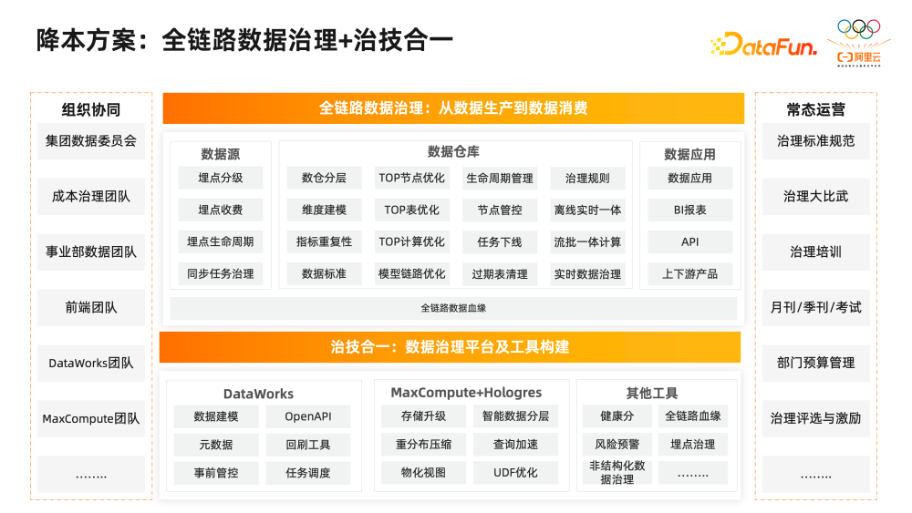
成本治理大的目的都是推动以“更低成本”换取“更高”的最终业务价值。这里的成本同时包含了人与机器，这也是我们一直在强调的成本治理不要仅仅关注机器的成本，例如我们用3个人，能完成原本5个人的工作，这种提效也是一种降本的形态。回到技术人员关心的具体要做的事情上，成本治理的策略主要可以关注三个层面，主要指传统的机房形式，涉及硬件的采购、选型、优化等等，这里大部分工作一般由阿里云负责，不需要我们投入太多精力。主要涉及存储与计算能力的优化，例如提高存储的效率，压缩比，提高单位计算的能力，提高分布式调度的能力等等。主要涉及工具平台，例如高效地进行数据开发，将各类治理策略平台化，快速发现、解决、量化各类数据治理的问题。这些动作最终是为了实现我们成本治理的业务价值，例如整体集团节省了多少成本，某个事业部达成了多少的降本目标，某个业务板块的ROI等等，接下来，我们将重点针对引擎能力和平台能力做详细的介绍。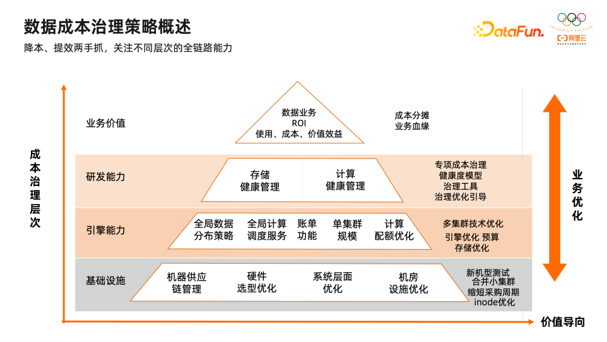
首先我们提到对于引擎侧的降本，是要向核心技术要红利。DataWorks在阿里巴巴集团结合阿里云ODPS一体化大数据智能计算平台能力，不断突破性价比世界记录，满足多元化数据计算需求。阿里云ODPS（OpenData Platform and Service）自2009年开始建设至今，提供规模化批量计算、实时交互式计算、流式计算等可扩展的智能计算引擎，是目前中国最早自研，应用范围最大，能同时支持超过10万台服务器并行计算的大数据智能计算平台。其中大规模计算批量引擎MaxCompute在TPCx-BigBench-100TB测试中，连续6年稳定全球冠军，2022年，MaxCompute评测结果性能较2021年提升40%，同时成本下降近30%。实时交互式计算引擎Hologres在2022年TPC-H 30000GB性能评测中，获得世界第一，超过原世界记录23%。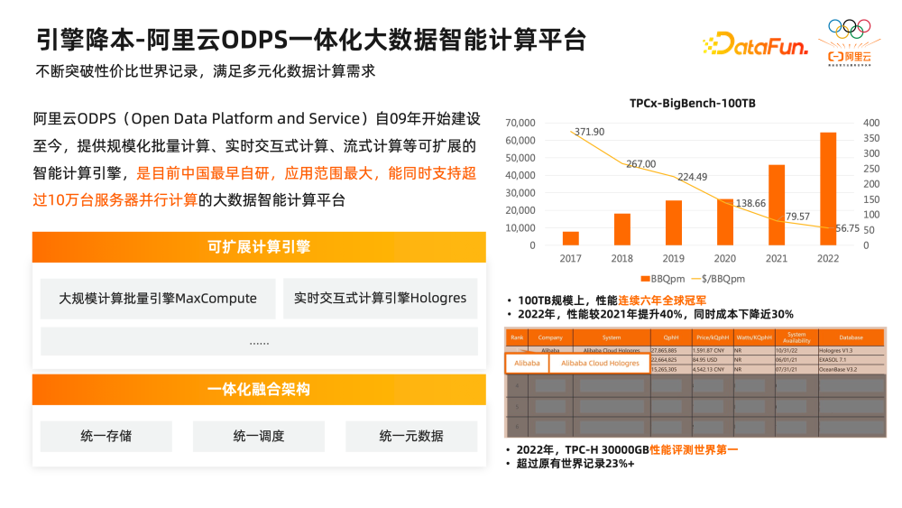
这些记录背后是ODPS持续13年深耕自研技术的成果，ODPS-MaxCompute基于盘古存储，提供高性能的存储引擎，存储成本比Apache ORC和Parquet节约20%和33%存储空间，计算效率对比Apache ORC和Parquet分别有30%和40%的性能提升。伏羲大规模分布式调度系统在全区域数据排布、去中心化调度、在线离线混合部署、动态计算等方面全方位满足新业务场景下的调度需求，在单日任务量千万级、单日计算量EB级的压力下，保障了基线全部按时产出。强大的高性能SQL计算引擎完整支持标准SQL(TPC-DS 100%兼容)且支持Hive/Spark兼容，一套SQL引擎支持离线、近实时分析、交互式分析场景，TPC-H指标上领先Spark 3X以上。ODPS-MaxCompute连续六次突破性能/成本世界记录，也是释放云上技术红利的最佳诠释之一。 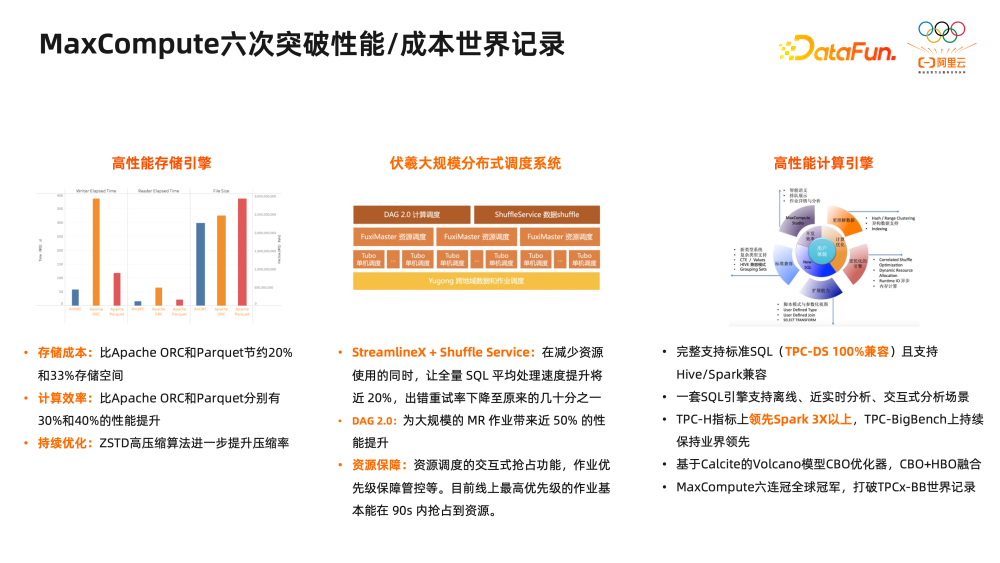
ODPS-MaxCompute在2022年全新发布了弹性CU能力，在过去预留 CU 的基础上，可以设置不同的弹性策略，选择指定时间段的弹性规格。一方面降低使用成本，避免过去为了高峰期的执行效率，预留较多 CU，在低峰期浪费资源的情况，通过弹性实现削峰填谷。例如原先为了保障资源稳定性，购买100CU包年包月资源，但是这100CU使用效率是不一样的，凌晨高峰期使用率高，白天使用率低，资源有一定浪费。弹性CU的方式可以购买更多的分时弹性CU资源，例如高峰期300CU，低峰期50CU，实现资源的弹性分配。基于原先按量付费以及包年包月形式，ODPS-MaxCompute弹性CU可以让整体成本再降低25%，多种灵活的资源使用方式带来TCO的最低。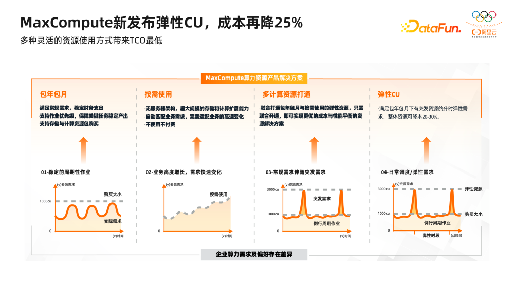
在传统的数据架构中，分为离线、实时、在线三种链路。- 通过如Hive，Spark，MaxCompute等离线加工引擎处理大规模数据
- 通过如Flink、Spark Streaming等流式加工技术来实现计算前置，并将计算结果保存在HBase、Redis等系统提供快速访问
- 通过Clickhouse、Druid等实时系统，计算规模不如离线，但交互式分析能力比离线统计更灵活，支持数据的实时写入，以数据接近源时的状态直接灵活分析。这种纷繁芜杂的复杂架构带来的是极高的维护成本与技术成本。
这三种链路对应不同的技术架构及存储引擎，数据产生了割裂，割裂之后还需要补充联邦查询技术，对外提供一个统一的查询入口，但是数据散布在不同的系统里面，也许可以解决统一数据界面的问题，但性能和一致性很难保证，性能上联邦查询是和最慢的执行过程对齐，一致性上一个源头多条链路，加工逻辑很难保证处处一致，日常数据偏差和核对工作量很大。ODPS-Hologres提供高性能的实时交互式计算引擎，基于一站式实时数仓的HSAP（Hybrid Serving & Analytical Processing，分析服务一体化）理念，同时满足OLAP分析、点查、交互式查询等多种实时需求。- 在离线方面，通过统一存储，统一调度、统一元数据、和MaxCompute无缝打通，数据无需导出至Hologres，实现离线实时一体化架构。
- 在实时与在线部分，Hologres在存储层，既支持批量数据的导入，也支持在线的实时写入与更新，不管是离线的数据还是实时的数据都可以存储在一个系统，在服务层，支持多种负载，保证了高性能的在线点查应用，也支持灵活的多维分析，提供统一数据服务层，减少数据割裂。
通过这种全新的方式，Hologres将传统的离线、实时、在线三种链路进行最大的简化，通过1.3亿TPS写入，亿级数据亚秒级查询，打破TPC-H世界记录的极致性能，实现成本与性能的平衡。2022年，Hologres发布一主多从的模式，通过共享存储再次降低实时数仓的成本，共享存储实时高可用，多Region部署数据自动复制，秒级灾备，当指定一个实例是写实例时，其他实例就是读实例，当写实例写好之后，其他实例实时可见做到了数据一致性。并且弹性计算层的实例实现物理隔离，当写入实例宕机后，不会影响只读实例。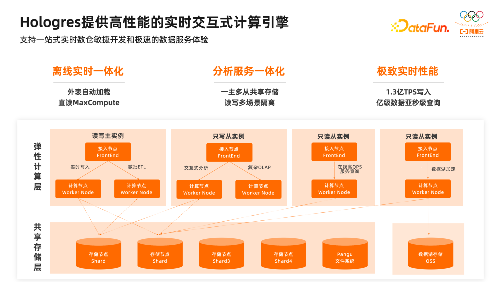
引擎降本核心是向技术要红利，不断突破技术的极限。阿里云ODPS（OpenData Platform and Service）自2009年开始建设至今，提供规模化批量计算、实时交互式计算、流式计算等可扩展的智能计算引擎，是目前中国最早自研，应用范围最大，能同时支持超过10万台服务器并行计算的大数据智能计算平台。有了良好的基础设施和引擎体系，再往研发平台和研发过程走一层，就是面向我们的成本治理目标的治理策略的落地，其实就是围绕着我们实际多角色、多业务、持续增长的数据需求带来的数据治理工作了。- 业务高速增长往往配套着计算存储成本的增长，而当面对计算存储的扩容需求时，数据治理组、业务数据治理组、财务等多个团队，需要有一个通用的衡量标准，来判断是否是满足正常业务需求增长所需的资源消耗，还是存在大量资源使用不合理和浪费现象。
- 而对于技术团队来说，如果要进行面向成本领域的数据治理工作，那到底是业务领域的研发团队需要重点投入，哪些团队来负责治理效果，具体落实治理动作的责任人是谁，通过哪些措施和动作真正最大程度地提升了治理效果，获取了更高的业务ROI，这也需要有一个衡量标准来定义治理的效果。
DataWorks数据治理中心提供了数据治理的量化评估、数据治理问题自动发现和预防，数据治理问题快速处理等能力，将书面的数据治理规范落地成平台化的产品能力，让数据治理不再一个 “阶段性项目”，而是一个“可持续的运营项目”。在阿里巴巴内部，我们做数据治理的时候，经常会参考一个健康分的概念。对于某个BU来说，比如我们今年的目标之一，就是把健康分从60分干到80分。健康分涉及的治理领域有计算、存储、研发、质量、安全等各个方面，围绕这些领域会形成具体的治理策略与方法，这些策略和方法有些事集团统一的规定，有些是部门基于自己的业务情况自己制定的，但基本也都是围绕分析、诊断、定位、优化、评估、建议等流程来进行。这里面如果涉及产品化的需求就会提给DataWorks团队，例如治理中心、治理工作台、健康分等等。大家一起共同建设治理平台，DataWorks上很多数据治理的能力，也离不开我们这么多兄弟团队给我们提供的建议。围绕健康分这种考核指标，各个团队就会有一个统一的衡量标准，大家可以往一个目标共同努力，从组织层面，这也是健康分非常重要的价值。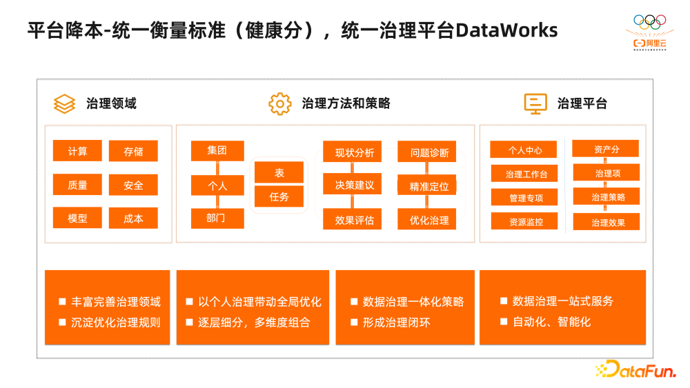
DataWorks数据治理中心的健康分是依据数据资产在数据生产、数据流通及数据管理中的用户行为、数据特性、任务性质等元数据，用数据处理及机器学习等技术，对各类型数据进行综合处理和评估，在个人、工作空间的维度客观呈现数据资产状态的综合分值。健康分体系，以元数据建设为依托，建设集“存储、计算、研发、质量和安全”的五大健康度领域，构建“存储健康分、计算健康分、研发健康分、质量健康分和安全健康分”五大健康分指标。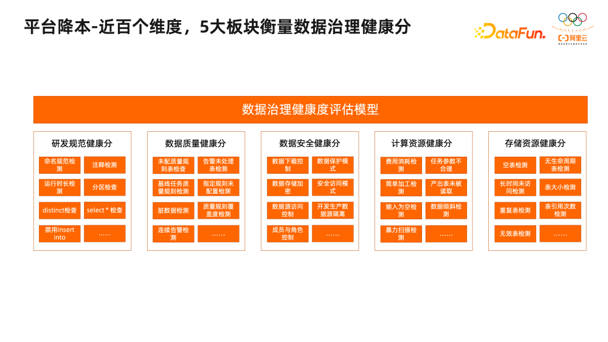
健康分的分值范围为0至100，分值越大代表数据资产的健康度越好，较高的健康度可以帮助用户更放心、更高效、更稳定的使用数据，保障数据生产和业务运转。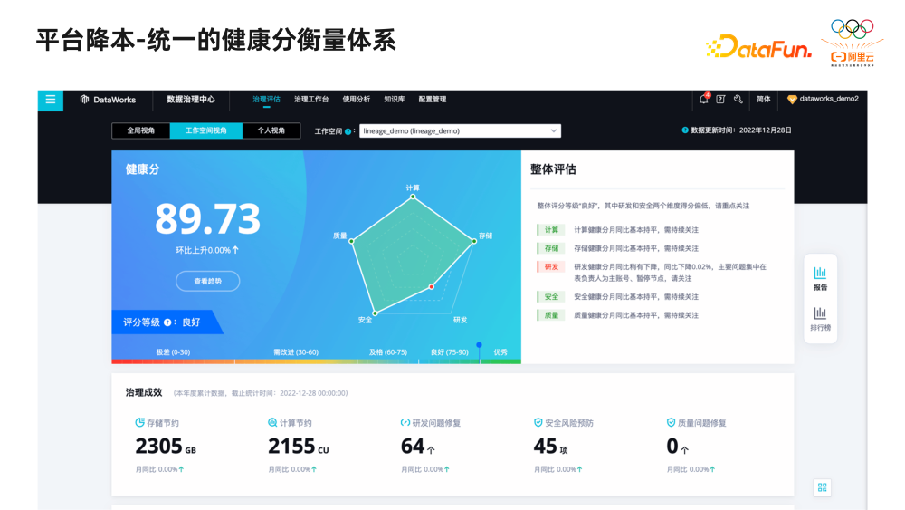
而数据治理专家梳理日常通过人肉治理的问题和逻辑，沉淀为DataWorks数据治理中心的数据治理项，并在数据治理中心定义对应治理领域，让治理项落入对应领域进行综合评分，同时还进行：- 在治理的过程中，不断丰富完善治理领域：比如在集团内部实践时，治理过程也是逐步迭代和专项拓展的。首期成本治理阶段，治理小组先选择「存储」治理维度进行攻坚，将基于目标治理业务中，关于「存储」维度相关的高ROI的存储治理项，进行规则定义和治理检查。
比如，数据治理中心需要针对数据表要求用户进行存储生命周期管理，不使用和访问的数据需要及时回收，释放存储空间。那首先定义存储管理是否进行，最明显的识别方式，即为是否为产出的数据表设置了生命周期，进而，在设置了生命周期的基础上，则需要判断设置的生命周期值是否合理，是否过度保存了项目空间中的无用数据。针对这几种情况，治理专家和平台侧，定义治理项及对应口径，并沉淀优化治理规则，比如：1.未管理数据表：未设置生命周期的分区表进行识别，当同时满足以下条件，数据表是分区表，没有设置生命周期，且近30天没有访问时，就命中该治理项，并判定该表为未管理的数据表。治理小组也根据提供对应的处理操作建议，优先建议用户进行生命周期的快速设置。针对一些需要长期保留的数据，也可通过设置白名单或设置长生命周期的方式来处理。2.无访问数据表：该治理项则是针对进行了初步管理，但是实际是无用数据进行识别。占用了大量存储但是无下游访问的数据表，通常情况下是僵尸数据或者冷数据，需要用户进行处理识别，进行合理生命周期设置，或者进行删除操作。针对「存储」维度进行专项治理，通过明确的「治理项」发现问题，让资产负责人根据DataWorks数据治理中心提供的建议及治理手段完成治理，实现在存储维度的健康分提升。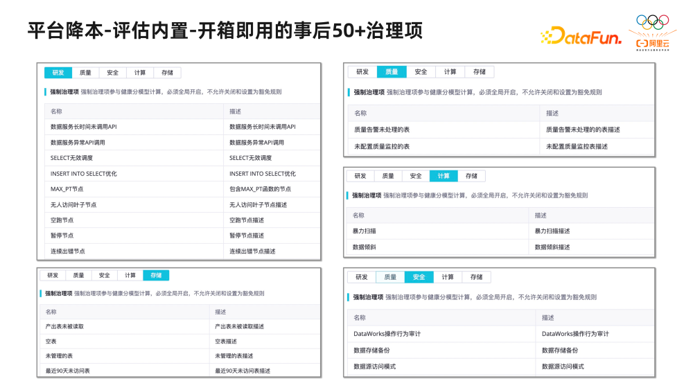
这样在下个阶段，治理小组可以再进行阶段性工作的定义和该项领域的治理知识沉淀、深化，如在实际实践中，在完成首期存储治理后，治理小组：1.重点开始攻坚「计算」维度，定义计算侧重点关注的治理项，进行落地推动，如增加对「数据倾斜」、「暴力扫描」的计算任务识别，逐步分析完成每阶段的成本优化工作的推进，以及最终成本节省效果的统计；2.深化「存储」维度，增加对「空表」「90天内无读取使用表」等治理项，供下阶段治理计划识别，减少该类无效数据对于数据成本、数据使用的影响；3.基于DataWorks数据全流程链路，平台工具化治理能力，并针对于不同的治理项，提供不同的直接可用的治理手段，并且为了预防，提供基于各个过程的提前检查项。做到从根本上进行提前规约。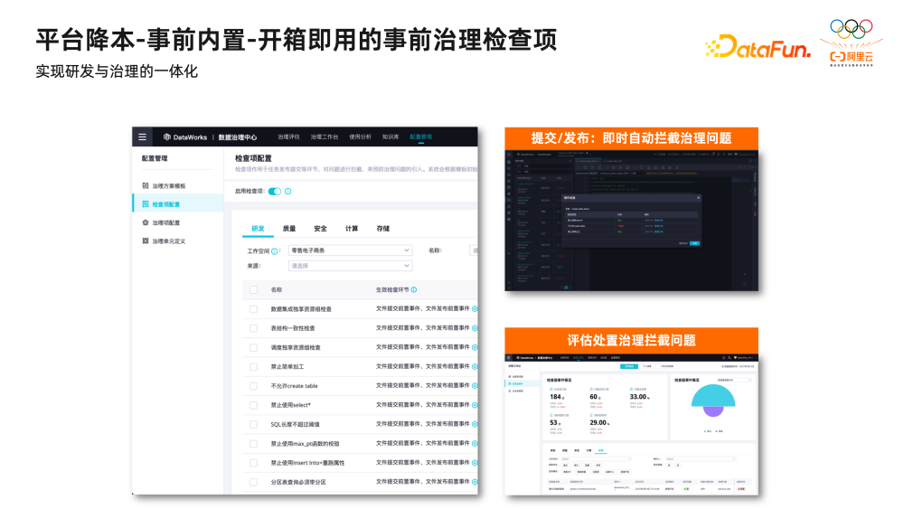
当治理小组完成对治理项的制定后，实际的数据表及任务的责任人，则成为了最细粒度的数据成本治理的责任方。在长效机制上，DataWorks数据治理中心以个人治理的健康分提升，带动全局的持续治理优化，并面向管理员和普通成员提供不同层次的统计，简化治理推进的难度。当前我们在阿里云上已经为企业累计发现数据治理问题抄过100万+，数据治理问题处理率达60%，事前治理问题拦截率达到36%。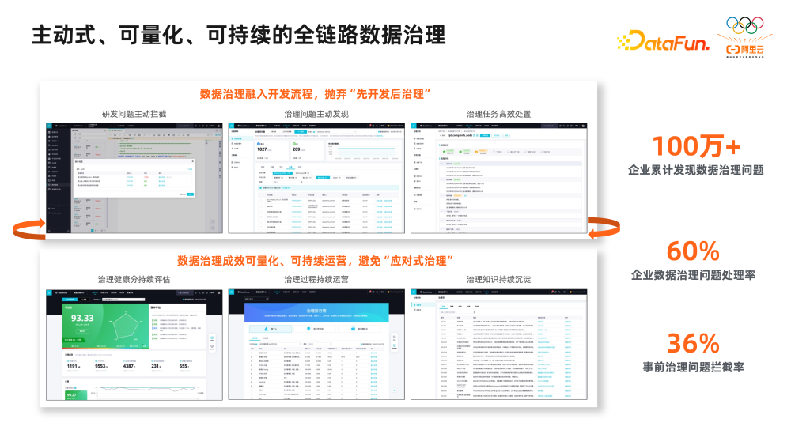
平台工具层以数据治理健康分为抓手，从存储、计算、研发、质量、安全等五个维度给出评估与治理方案，帮助用户更快地发现并处理各类数据治理问题，引导用户逐步进行数据治理建设，将“书面化”的数据治理规范落地成“主动式、可量化、可持续”的全链路数据治理。七、数据治理组织架构及文化建设
刚才说的大部分和技术相关一些，但是对于数据治理来说，人与技术同样重要。相比与以前专注与技术本身，数据治理和其他团队的协同关系更强，更需要一个紧密、完善的组织不断去计划、实施、优化数据治理的工作。阿里的数据治理组织架构分为三层，整个架构的整体好处，是保证工作总体目标和方法统一，各领域的子目标服从与所属的业务部门，并且能够贴近业务。包含- 数据专业委员会。属于整个集团层面，主要是从宏观层面上的职能确认。CDO为该组织的牵头负责人，作为多个大部门共同执行落地的组织背书方。
- 数据治理专题小组。从属于集团专业委员会下，更专注于数据治理本身命题的，则是数据治理专题组：制定数据治理规范，协调各团队目标与进度，沉淀各类治理实践，组织数据治理运营等各项工作。
- 数据治理团队。各个功能部门下的领域数据治理部门，有专注于平台工具建设的数据平台团队、有专注自身业务领域下的对口业务数据治理团队、还有其他协同的财务、法务、安全团队，这些团队都有专人加入整个数据治理的工作中，以财年和季度为时间周期，确定各阶段的治理工作目标。
1.不断持续迭代企业级治理规范：如，阿里巴巴数据资产治理规范，随着业务的诉求和实际积累经验不断修订与迭代；2.定期确定企业级和业务级的治理目标，确认年度/季度的总体目标和分拆目标，建立使用资产健康分作为集团统一普查衡量标准，进行短期和长期的标准评估方式，统一各方认知，降低沟通消耗。3.不断配合治理目标达成的同时，也需要降低数据治理的成本，配套确认长期性、常态化的策略、工具、文化的建设内容和配合方式。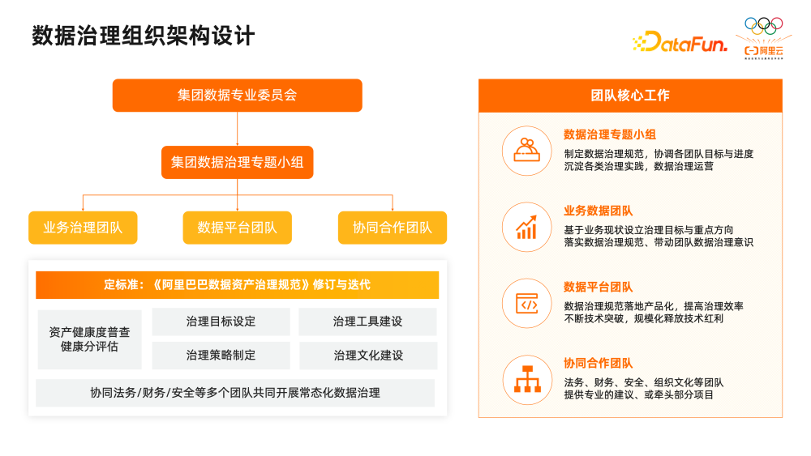
互联网公司本身是一个注重运营的企业。而成本治理过程本身，也是在帮助企业建立对数据资产的一种运营，通过对计算资源、存储资源、计算过程、治理人员、治理过程、业务产出都作为运营内容的一种，来实现最终业务价值的最大化。数据治理的建设目标是期望建立是一个通用框架，主动式治理、各个业务方可扩展，不影响业务的情况下，同样能推动业务方完成数据治理，真正各方实现获益。针对于我们本身的数据团队人员的数据专业技能+职业素养能多阶梯的上升，也是适应日新月异的治理需求，现代化的云产品开发、财务管理、人才培养的的对应手段。所以治理文化的建设在我们内部实践时，也是一个非常重要的环节。它是让能够持续进行数据治理运营，让数据治理成为常态化工作的组成部分。例如治理大比武、治理培训、月刊/季刊/考试、部门预算管理、治理评选与激励。- 治理培训。数据治理专题小组通过数据大学，制定一套通用的数据治理课程，分享一些通用的体系、规范、工具的课程，参与培训后还可以参加考试认证。
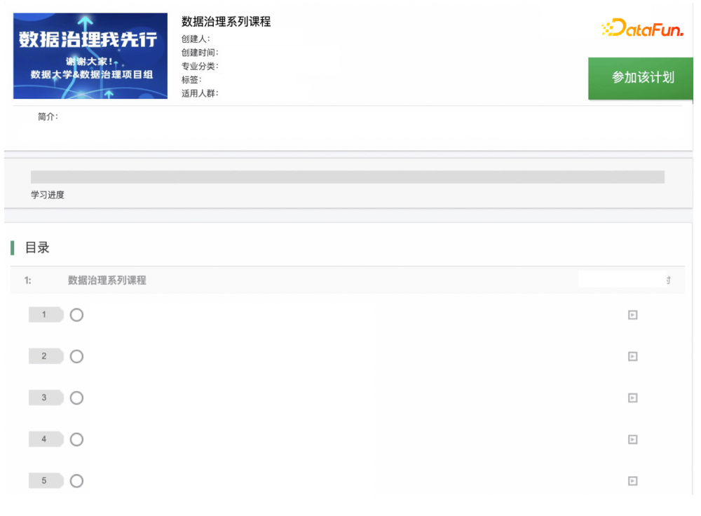
- 治理大比武。数据治理专题小组发起各事业部大比武评比活动，从数字结果、长期价值、团队合作、个人成长等各个方面进行PK和评选。有些事业部可能关心计算成本，有些关心稳定性、有些关心规范，项目类型丰富，也是一个非常适合大家互相交流学习的场合。
通过以上的数据治理场景实践，我们可以看到，数据治理平台的建设不是一蹴而就的，是通过长时间的积累进行逐步演进的，DataWorks在阿里巴巴十几年大数据建设中沉淀了数百项核心能力，从全链路上，主要包含了智能数据建模、全域数据集成、高效数据生产、主动数据治理、全面数据安全、快速分析服务等能力，其中还有众多细节受限于篇幅无法一一讲述，例如一般的运维只提供成功、失败两种状态，DataWorks提供了运行慢、等资源等多种分析结果，甚至做到了孤立节点、成环节点这种非常精细的状态治理，这些都是在每个场景逐步深入后的成果。 对于未来的判断，目前我们可以明显看到的几个数据治理趋势有：国家发布了各类培育统一的数据要素市场指导建议与法律法规，我们相信未来数据产权制度、流动交易制度、收益分配制度、安全治理制度等将不断完善，指导数据治理平台在各个方面不断补充平台能力。先开发后治理，这个肯定会逐步的迈出历史的舞台，所以后续所有治理工作应该事先融入开发的过程，而不是“先污染后治理”，生产运维、生产治理要实现一体化管理。刚才我们提到的数据治理涉及多个模块，多个操作，如果未来我们将模块与模块之间，功能与功能之间、操作与操作之间，实现流程的自动化，例如：元数据自动发现、自动采集、自动打标、自动归类等，同时对应匹配一些智能化的数据治理策略或者模板，将会极大提高我们数据治理的效率。DataWorks服务了阿里巴巴集团内部所有事业部，包含天猫、淘宝、1688、速卖通、优酷、高德、本地生活、盒马、菜鸟、钉钉等等，成为各个事业部通用的数据开发治理平台。同时还通过阿里云将阿里巴巴数据治理的最佳实践输出给云上客户，目前已经服务的企业客户数已经超过1万家，覆盖了工业制造、能源、汽车、金融、零售、政务、互联网等等行业，既有大型央企、国企、世界500强企业，也有刚开始创业1-2年的中小企业，从平台的通用性上，DataWorks可以满足不同行业，不同企业发展阶段的大数据开发治理需求。- 国家电网大数据中心通过DataWorks实现总部+27家省（市）公司PB级数据的统一管理，通过全链路数据中台的治理与监测运营体系，加快电网整体数字化转型升级。
- 亿滋中国作为世界500强零食企业，通过DataWorks智能数据建模进行全链路的数据模型治理，极大提升数据中台的自服务能⼒，让企业数据决策实现下放，释放新零售的数字化力量。
- 友邦人寿基于阿里云搭建金融数据中台，承接了10倍业务流量的高峰，让数据处理效率提升20倍，企业整体算力成本节省达数百万。
- “非洲之王”传音互联有力支撑集团互联网业务，数据治理效率提升2-3倍，为集团95%以上的业务增长赋能，带领更多中国企业品牌走向全球新兴市场。
- 哪吒汽车逐步完善数据治理与数据湖能力，依靠稳定可靠、性能卓越、弹性扩展的大数据平台，未来将支持超过60万+量汽车，数PB级别的数据分析。
- 三七互娱以DataOps理念激活数据价值，建设自动化、敏捷、价值导向的数据体系，解决数据获取难、业务响应慢、数据场景单一等数据消费的痛点，利用数据驱动运营精细化。
- 创梦天地基于开源的EMR引擎，用DataWorks替换自研调度系统，企业内部的技术人员可以更加专注业务，助力游戏行业的数据化运营。
数据治理是一个庞大的话题，涉及广泛，DataWorks作为工具型的产品，不变的是围绕用户为中心，让开发人员减少低效的重复劳动，全方位提升企业数据效率，为企业降本增效。如果想了解更多DataWorks及文中相关产品信息，可以在阿里云官网找到我们。最后，我们也非常感谢集团内各个兄弟部门及阿里云上各个行业的客户给我们提供了很多场景与建议，也欢迎与其他专家进行深度的交流探讨。
到2022年12月底，DataFun将完整走过5个春秋，为庆祝DataFun成立5周年，我们将在12月-2月发布系列技术文章专栏，精选大数据和人工智能领域的热点技术，邀请DataFun社区最具贡献力的资深技术专家，针对过去几年所从事领域技术的演进进行系统性的总结，并展望未来的技术发展趋势。如果这个文章对你有帮助，不要忘记 「在看」 「点赞」 「收藏」 三连啊喂！